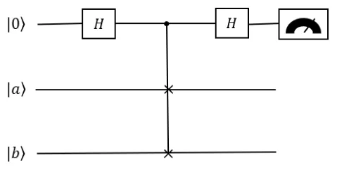
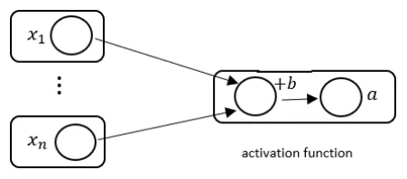
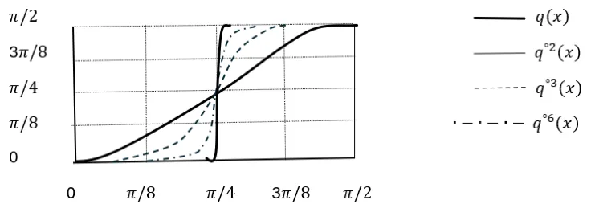
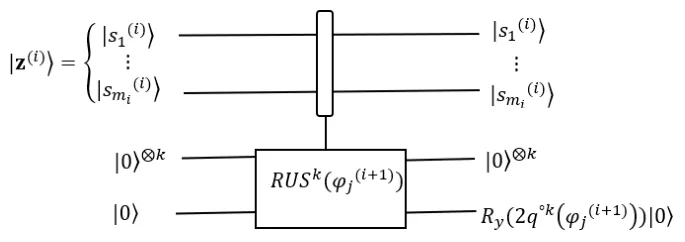
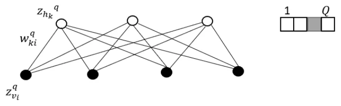

Chương 10 — Giới hạn và khả năng giải của điện toán lượng tử
Chương 10
Giới hạn và Tính giải được của Tính toán
Lượng tử
Mức độ mà các khả năng và giới hạn của tính khả toán phụ thuộc vào hình thức luận toán học được giả định thể hiện đặc biệt rõ ràng trong tính toán lượng tử. Ở đây, các phương pháp, thuật toán và khái niệm cơ bản của tính toán số cổ điển phải được chuyển dịch sang hình thức luận toán học của cơ học lượng tử, đồng thời các khái niệm mới của hình thức luận lượng tử phải được tận dụng nhằm vượt qua các giới hạn cổ điển của tính khả toán. Theo nghĩa của luận đề Church, một máy tính số cổ điển cũng có thể được hiểu như một mạch các cổng Boolean xử lý các bit. Trong tính toán lượng tử, chúng được thay thế bằng các cổng lượng tử biểu diễn các toán tử đơn vị (unitary) của cơ học lượng tử và xử lý các bit lượng tử. Những lợi thế tính toán to lớn bắt nguồn từ các đặc trưng riêng biệt của trạng thái cơ học lượng tử như sự chồng chất (superposition) và sự rối lượng tử (entanglement). Các kết quả tính toán của máy tính lượng tử được giải thích bởi quá trình đo lường cơ học lượng tử. Các phương pháp tính toán cổ điển như phép biến đổi Fourier nhanh được chuyển dịch sang hình thức luận lượng tử và nhờ đó cho phép giải quyết các bài toán tính toán khó trong thời gian đa thức (ví dụ: phân tích thừa số nguyên tố với thuật toán Shor). Tuy nhiên, trong trường hợp này, không thể loại trừ khả năng cũng tồn tại một lời giải số cổ điển trong thời gian đa thức. Điều này phân biệt kết quả đó với sự bất khả thi căn bản của một lời giải số, vốn đã được chỉ ra đối với tính toán thực trong Chương 7. Việc nhận dạng mẫu và phân loại mẫu cổ điển của học máy (ML) với mạng nơ-ron cũng có thể được chuyển dịch sang hình thức luận lượng tử và dẫn đến sự gia tăng hiệu suất đáng kể nhờ sự chồng chất và sự rối lượng tử. Trong lý thuyết độ phức tạp lượng tử, các bài toán NP trước đây có thể được quy về các bài toán P. Trong tính toán lượng tử cũng vậy, các khả năng và giới hạn lý thuyết phụ thuộc vào hình thức luận toán học được giả định. Ngược lại, việc hiện thực hóa về mặt kỹ thuật – vật lý của một máy tính lượng tử lại là một câu hỏi thực nghiệm.
177
178 Trí tuệ Nhân tạo của Các Hệ thống Phỏng thần kinh
Theo luận đề Church, về nguyên tắc mọi chương trình máy tính cổ điển đều có thể được hiểu là chương trình của một máy Turing. Mọi máy tính có khả năng lập trình phổ quát khi đó có thể được hiểu là một máy Turing phổ quát. Trong Chương 2, chúng ta cũng đã giới thiệu các máy thanh ghi (register machine) tương đương với máy Turing. Một mô hình máy tính có tính đến kiến trúc của các máy tính kỹ thuật được dựa trên các mạch. Thành phần của các mạch là các cổng thực hiện các phép toán logic mà các hàm khả toán có thể quy về đó. Tương tự như phần mềm, các cổng trong một mạch được kết nối với nhau bằng các đường dây. Trong phần sau đây, mô hình mạch cổ điển được sử dụng để giới thiệu các mạch lượng tử với các cổng lượng tử trong bối cảnh cơ học lượng tử. Cũng như trong trường hợp cổ điển, mô hình mạch lượng tử rất gần với việc hiện thực hóa kỹ thuật của một máy tính lượng tử.
Bit Lượng tử
Trong một máy tính cổ điển, một bit chỉ có thể là 0 hoặc 1. Một bit lượng tử trong máy tính lượng tử có thể vừa là 0 vừa là 1. Một hệ lượng tử chẳng hạn như một photon có thể đồng thời bị phân cực theo cả chiều dọc và chiều ngang. Các trạng thái thay thế này được biểu diễn bởi các vector |0⟩ và |1⟩ của một không gian Hilbert hai chiều H trên trường số phức. Các trạng thái không chồng chất |0⟩ và |1⟩ có thể được xem là các phần tử cơ sở của không gian Hilbert hai chiều H, tức là |0⟩= (1
0) và |1⟩= (0 1).
Sự Chồng chất Lượng tử
Theo nguyên lý chồng chất, tổ hợp tuyến tính |ψ⟩= α|0⟩+ β|1⟩ với các số phức α, β ∈C khi đó cũng là một trạng thái (chồng chất) của không gian Hilbert này. α và β là các biên độ của một hàm xác suất với |α|2 + |β|2 = 1. Sự chồng chất này được gọi là một bit lượng tử (hay viết tắt là qubit). Một cách trực quan, α biểu thị xác suất mà hệ lượng tử này
Giới hạn và Tính giải được của Tính toán Lượng tử 179
ở trong trạng thái |0⟩. Với xác suất phần bù β, hệ lượng tử ở trong trạng thái β. Với một bit lượng tử, nói chung không chỉ có hai khả năng 0 và 1 như với các bit cổ điển, mà có vô số khả năng về xác suất mà một trong hai trạng thái |0⟩ hoặc |1⟩ có thể nhận được. Trong trường hợp bit lượng tử |ψ⟩= 1 √
2(|0⟩+ |1⟩) = 1 √
2|0⟩+ 1 √
2|1⟩, do 1 √
1 √
2 = 1 2 + 1 2 = 1 nên suy ra rằng nó ở trạng thái |0⟩ với xác suất 50% và ở trạng thái |1⟩ với xác suất 50%.
2 +
2
2
Một phép đo dẫn đến sự sụp đổ của biên độ xác suất. Theo các tiên đề của cơ học lượng tử, một phép đo sẽ xác định một trong hai trạng thái bit khả dĩ với xác suất bằng nhau trong trường hợp này. Tuy nhiên, điều này có nghĩa là kết quả của phép đo này mang tính ngẫu nhiên.
Số Phức dưới dạng Vector
Số phức (Ebbinghaus et al., 1991, Chương 3) mở ra một cách biểu diễn hình học cho các bit lượng tử dưới dạng các vector trạng thái trong không gian Hilbert. Các số phức z = a+ib với i = √−1 và các số thực a, b ∈R có thể được xác định về mặt hình học như các điểm của mặt phẳng thực C = R2 với các vector z = (a b ). Trong Hình 1(a), a và b được diễn giải là các tọa độ vuông góc (Descartes) (Hidary, 2019, Hình 11.11 và 11.12). Một cách khác, vector cũng có thể được định nghĩa theo định lý Pythagoras thông qua bán kính r =
√ a2 + b2 và góc θ trong tọa độ cực (r, θ). Nếu ta đặt r = 1 làm chuẩn, kết quả thu được là đường tròn đơn vị trong Hình 1(a), với đường tròn này các tọa độ a và b có thể được xác định theo lượng giác như một hàm của góc quay θ với 0 ≤θ < 2π. Hình 1(b) sau đó cho thấy một biểu diễn hình học thay thế cho số phức với tọa độ cực z = cos(θ) + i sin(θ). Theo một định lý của Euler, cos(θ) + i sin(θ) = eiθ với số Euler e. Điều này dẫn đến đồng nhất thức Euler nổi tiếng eiπ = −1.
180 Trí tuệ Nhân tạo của Các Hệ thống Phỏng thần kinh (a)
(b)
Hình 1. Biểu diễn hình học của số phức với tọa độ Descartes (a) và tọa độ cực (b) (Mainzer, 2020, tr. 57).
Hai trạng thái chồng chất |+⟩= 1 √
2(|0⟩+ |1⟩) và |−⟩= 1 √
2(|0⟩−|1⟩) khác nhau ở dấu của trạng thái |1⟩. Theo đồng nhất thức Euler, suy ra |−⟩= 1 √
2(|0⟩+ eiπ|1⟩), tức là các trạng thái chồng chất khác nhau một góc quay r, được gọi là pha tương đối.
Giới hạn và Tính giải được của Tính toán Lượng tử 181
Bit Lượng tử dưới dạng Vector Trạng thái của Mặt cầu Bloch
Các bit lượng tử có thể được biểu diễn trực quan dưới dạng các vector trạng thái của một mặt cầu đơn vị với bán kính r = 1 (mặt cầu Bloch) (Benenti et al., 2008, tr. 103). Việc tính toán các bit lượng tử bằng cách áp dụng các toán tử đơn vị tương ứng với phép quay các vector trạng thái xác định duy nhất các điểm trên bề mặt của mặt cầu đơn vị (Hình 2). Các trạng thái |ψ⟩ tương ứng có thể được đặc trưng không chỉ bởi ba tọa độ không gian Descartes x, y và z mà còn bởi tọa độ cực của vector tương ứng với các góc θ và φ. Ở đây, x = cos(φ) sin(θ), y = sin(φ) sin(θ) và z = cos(θ).
Mỗi vector của mặt cầu Bloch phải thỏa mãn điều kiện chuẩn hóa x2 + y2 + z2 = 1. Hai cực của mặt cầu trên trục z được định nghĩa bởi |0⟩ (cực bắc) và |1⟩ (cực nam). Trên trục x, hai trạng thái chồng chất 1 √
2(|0⟩+|1⟩) và 1 √
2(|0⟩−|1⟩) được biểu diễn, chúng khác nhau bởi một pha tương đối. Tương ứng, trên trục y, 1 √
2(|0⟩+ i|1⟩) và 1 √
2(|0⟩−i|1⟩) được phân biệt với nhau.
Hình 2. Các vector trạng thái trên mặt cầu Bloch (Mainzer, 2020, tr. 58).
182 Trí tuệ Nhân tạo của Các Hệ thống Phỏng thần kinh
Mạch của các Toán tử Lượng tử
Các phép quay của vector trạng thái trong mặt cầu Bloch tương ứng với việc áp dụng các toán tử đơn vị trong cơ học lượng tử. Chúng được hiện thực hóa trong máy tính lượng tử bằng các cổng lượng tử, tạo nên mạch của một máy tính lượng tử. Về mặt đồ họa, các toán tử nhiều ngôi được biểu diễn bằng các hộp với các đường dây cho đầu vào và đầu ra (Hidary, 2019, tr. 22–29).
Ví dụ, toán tử NOT cổ điển một ngôi tương ứng với toán tử X, toán tử này lật trạng thái |0⟩ trên trục z của mặt cầu Bloch thành trạng thái |1⟩ và ngược lại. Do đó, nó còn được gọi là
0 1 1 0
vào |0⟩ cho ra toán tử lật bit (bit flip). Việc áp dụng X :=
0 1
1
0 + 0
0
X|0⟩=
= |1⟩.
=
=
1 0
0
1 + 0
1
Việc áp dụng toán tử X có thể được viết là X|j⟩= |j ⊕1⟩ với j = 0, 1 và ⊕ là phép cộng mô-đun 2. Phần tử mạch tương ứng được ký hiệu bằng đồ họa trong trường hợp áp dụng cho |0⟩ bởi
Toán tử Y quay vector trạng thái quanh trục y. Khi đó,
0 −i i 0
áp dụng vào |1⟩ cho ra trạng thái
Y :=
0 −i
0 −i
−i
0
Y |1⟩=
= −i|0⟩.
=
= i 0
1
0 + 0
0
Toán tử Y được biểu diễn như một cổng lượng tử trong mạch của một máy tính lượng tử là
Toán tử Z quay vector trạng thái quanh trục z. Nó còn được gọi là toán tử lật pha vì nó lật vector trạng thái với số đo radian
1 0 0 −1 là π, tương ứng với 180◦. Việc áp dụng Z := vào
Giới hạn và Tính giải được của Tính toán Lượng tử 183
|0⟩ cho ra
1 0
1
1 + 0
1
Z|0⟩=
= |0⟩.
=
=
0 −1
0
0 + 0
0
Việc áp dụng Z vào |1⟩ cho ra
1 0
0
0 + 0
0
Z|1⟩=
= −|1⟩.
=
=
0 −1
0 −1
−1
1
Toán tử Z được biểu diễn như một cổng lượng tử trong mạch của một máy tính lượng tử là
Cùng với ma trận đơn vị và các bội ∓ và i, các toán tử này cấu thành nhóm Pauli.
Toán tử dịch pha tổng quát Rϕ giữ nguyên trạng thái |0⟩, nhưng quay trạng thái |1⟩ một góc, tương ứng là dịch pha ϕ với Rϕ :=
1 0
. Toán tử Rϕ được biểu diễn như một cổng lượng tử trong
0 eiϕ mạch của một máy tính lượng tử là
Toán tử Pauli Z là một trường hợp đặc biệt của Rϕ với độ dịch ϕ = π. Do đồng nhất thức Euler eiπ = −1, eiπ có thể được thay thế bằng −1 trong ma trận Z.
Hai toán tử dịch pha khác cũng là các trường hợp đặc biệt của
1 0 toán tử quay Rϕ: Với ϕ = π/2, toán tử S với S := quay
0 i trạng thái quanh trục z một góc 90◦. Toán tử S được biểu diễn như một cổng lượng tử trong mạch của một máy tính lượng tử là
1 0
Với ϕ = π/4, toán tử T với T :=
quay trạng thái
0 eiπ/4 quanh trục z một góc 45◦. Ta có T 2 = S, bởi vì hai phép quay
184 Trí tuệ Nhân tạo của Các Hệ thống Phỏng thần kinh liên tiếp với góc 45◦ cho ra 90◦= 45◦+ 45◦. Toán tử T được biểu diễn như một cổng lượng tử trong mạch của một máy tính lượng tử là
Trong tính toán lượng tử, toán tử Hadamard H rất quan trọng vì nó biến đổi một bit lượng tử thành một sự chồng chất của hai
1 0 trạng thái. Việc áp dụng H := 1 √ vào |0⟩ cho ra
2
0 −1
1 0
1
1 + 0
H|0⟩= 1 √
= 1 √
0 −1
0
1 + 0
2
2
1
= 1 √
= 1 √
2(|0⟩+ |1⟩).
1
2
Việc áp dụng H vào |1⟩ cho ra
1 0
0
0 + 1
H|1⟩= 1 √
= 1 √
0 −1
0 −1
1
2
2
1
= 1 √
= 1 √
2(|0⟩−|1⟩).
−1
2
Toán tử H được biểu diễn như một cổng lượng tử trong mạch của một máy tính lượng tử là
1 0
Với toán tử đơn vị I :=
, các toán tử một ngôi đã giới thiệu trước đó
0 1 thỏa mãn các phương trình sau: HXH = Z, HZH = X, HY H = −Y , H† = H, và H2 = I.
Căn bậc hai của toán tử X, tương ứng với cổng NOT, tương ứng với một toán tử một ngôi, được biểu diễn bởi ma trận sau:
√
1 + i 1 −i
X = 1
.
2
1 −i 1 + i
Giới hạn và Tính giải được của Tính toán Lượng tử 185
Hiển nhiên là
√
1 + i 1 −i
1 + i 1 −i
X)2 = 1
1 2
X = (
2
1 −i 1 + i
1 −i 1 + i
0 4
0 1
= 1
=
.
4
4 0
1 0
Cổng này biến đổi trạng thái lượng tử |0⟩ thành 1
2((1+i)|0+(1−i)|1⟩) và |1⟩ thành 1
2((1 −i)|0 + (1 + i)|1⟩). Toán tử này được biểu diễn như một cổng lượng tử là
Các cổng căn bậc hai có thể được tạo cho mọi cổng bằng cách chỉ định một ma trận đơn vị mà khi nhân với chính nó sẽ cho ra cổng mong muốn.
Trong bước tiếp theo, các toán tử hai ngôi được giới thiệu cho các qubit hai chữ số. Toán tử SWAP hoán đổi qubit hai chữ số |01⟩ với |10⟩ và ngược lại. Các trạng thái cơ sở của không gian Hilbert được định nghĩa bởi các vector sau:
⎛
⎞
⎛
⎞
⎛
⎞
⎛
⎞
1
0
0
0
⎜ ⎜ ⎜ ⎜ ⎝
⎟ ⎟ ⎟ ⎟ ⎠
⎜ ⎜ ⎜ ⎜ ⎝
⎟ ⎟ ⎟ ⎟ ⎠
⎜ ⎜ ⎜ ⎜ ⎝
⎟ ⎟ ⎟ ⎟ ⎠
⎜ ⎜ ⎜ ⎜ ⎝
⎟ ⎟ ⎟ ⎟ ⎠
0
1
0
0
|00⟩= , |01⟩= , |10⟩= , |11⟩=
.
0
0
1
0
0
0
0
1
Toán tử SWAP áp dụng vào |01⟩ cho ra:
⎛
⎞
⎛
⎞
⎛
⎞
1 0 0 0
0
0 + 0 + 0 + 0
⎜ ⎜ ⎜ ⎜ ⎝
⎟ ⎟ ⎟ ⎟ ⎠
⎜ ⎜ ⎜ ⎜ ⎝
⎟ ⎟ ⎟ ⎟ ⎠
⎜ ⎜ ⎜ ⎜ ⎝
⎟ ⎟ ⎟ ⎟ ⎠
0 0 1 0
1
0 + 0 + 0 + 0
SWAP|01⟩=
=
0 1 0 0
0
0 + 1 + 0 + 0
0 0 0 0
0
0 + 0 + 0 + 0
⎛
⎞
0
⎜ ⎜ ⎜ ⎜ ⎝
⎟ ⎟ ⎟ ⎟ ⎠
0
= |10⟩.
=
1
0
186 Trí tuệ Nhân tạo của Các Hệ thống Phỏng thần kinh
Toán tử SWAP được biểu diễn như một cổng lượng tử trong mạch của một máy tính lượng tử là
Trong tính toán lượng tử, toán tử NOT có điều kiện (CNOT) có tầm quan trọng trung tâm vì nó có thể làm rối hai qubit. Trong toán tử 2 ngôi này, qubit thứ nhất được phân biệt là qubit điều khiển (control qubit) và qubit thứ hai là qubit mục tiêu (target qubit). Nếu qubit điều khiển ở trạng thái |0⟩, qubit mục tiêu giữ nguyên không đổi. Nếu qubit điều khiển ở trạng thái |1⟩, toán tử NOT X được áp dụng vào qubit mục tiêu. Cổng CNOT được sử dụng để tạo ra các trạng thái rối lượng tử. Ví dụ, CNOT được tính cho |10⟩:
⎛
⎞
⎛
⎞
⎛
⎞
1 0 0 0
0
0 + 0 + 0 + 0
⎜ ⎜ ⎜ ⎜ ⎝
⎟ ⎟ ⎟ ⎟ ⎠
⎜ ⎜ ⎜ ⎜ ⎝
⎟ ⎟ ⎟ ⎟ ⎠
⎜ ⎜ ⎜ ⎜ ⎝
⎟ ⎟ ⎟ ⎟ ⎠
0 1 0 0
0
0 + 0 + 0 + 0
CNOT |10⟩=
=
0 0 0 1
1
0 + 0 + 0 + 0
0 0 1 0]
0
0 + 0 + 1 + 0
⎛
⎞
0
⎜ ⎜ ⎜ ⎜ ⎝
⎟ ⎟ ⎟ ⎟ ⎠
0
= |11⟩.
=
0
1
Như một cổng lượng tử trong mạch của một máy tính lượng tử, toán tử CNOT được biểu diễn như sau:
Một toán tử điều khiển khác là CZ áp dụng toán tử Z vào qubit mục tiêu dưới cùng các điều kiện như toán tử CNOT:
⎛
⎞
1 0 0 0
⎜ ⎜ ⎜ ⎜ ⎝
⎟ ⎟ ⎟ ⎟ ⎠
0 1 0 0
CZ :=
.
0 0 1 0
0 0 0 −1
Giới hạn và Tính giải được của Tính toán Lượng tử 187
Ngược lại với toán tử CNOT, các qubit điều khiển và mục tiêu có thể hoán đổi cho nhau, tức là cổng CZ có tính đối xứng. Do đó, trong biểu diễn đồ họa của mô hình mạch, cả hai đường dây đều được gán một dấu chấm:
Sau các toán tử một và hai ngôi, các toán tử ba ngôi giờ đây được giới thiệu. Một ví dụ đầu tiên là toán tử Toffoli với hai qubit điều khiển và một qubit mục tiêu. Đó là lý do tại sao nó còn được gọi là toán tử CCNOT. Để thay đổi qubit mục tiêu, cả hai qubit điều khiển phải ở trạng thái |1⟩. Hai qubit đầu tiên x và y thỏa mãn hàm AND cổ điển (Boolean) để áp dụng hàm NOT vào qubit mục tiêu trong trường hợp x = 1 và y = 1:
(x, y, z) →(x, y, (z ⊕xy)).
Áp dụng vào |110⟩, toán tử CCNOT cho ra
⎛
⎞
⎛
⎞
⎛
⎞
1 0 0 0 0 0 0 0
0
0
⎜ ⎜ ⎜ ⎜ ⎜ ⎜ ⎜ ⎜ ⎜ ⎜ ⎜ ⎜ ⎜ ⎜ ⎝
⎟ ⎟ ⎟ ⎟ ⎟ ⎟ ⎟ ⎟ ⎟ ⎟ ⎟ ⎟ ⎟ ⎟ ⎠
⎜ ⎜ ⎜ ⎜ ⎜ ⎜ ⎜ ⎜ ⎜ ⎜ ⎜ ⎜ ⎜ ⎜ ⎝
⎟ ⎟ ⎟ ⎟ ⎟ ⎟ ⎟ ⎟ ⎟ ⎟ ⎟ ⎟ ⎟ ⎟ ⎠
⎜ ⎜ ⎜ ⎜ ⎜ ⎜ ⎜ ⎜ ⎜ ⎜ ⎜ ⎜ ⎜ ⎜ ⎝
⎟ ⎟ ⎟ ⎟ ⎟ ⎟ ⎟ ⎟ ⎟ ⎟ ⎟ ⎟ ⎟ ⎟ ⎠
0 1 0 0 0 0 0 0
0
0
0 0 1 0 0 0 0 0
0
0
0 0 0 1 0 0 0 0
0
0
CCNOT |110⟩=
= |111⟩.
=
0 0 0 0 1 0 0 0
0
0
0 0 0 0 0 1 0 0
0
0
0 0 0 0 0 0 0 1
1
0
0 0 0 0 0 0 1 0
0
1
Trong biểu diễn đồ họa của mô hình mạch, cổng Toffoli được thể hiện với hai đường dây cho hai qubit điều khiển và một đường dây cho dấu chấm của qubit mục tiêu:
Một toán tử ba ngôi trung tâm khác cho tính toán lượng tử là toán tử Fredkin, còn được gọi là toán tử SWAP có điều kiện, tức là toán tử CSWAP. Trong trường hợp này, qubit thứ nhất được
188 Trí tuệ Nhân tạo của Các Hệ thống Phỏng thần kinh dùng làm qubit điều khiển và hai qubit còn lại làm qubit mục tiêu. Nếu qubit điều khiển ở trạng thái |0⟩, các qubit mục tiêu giữ nguyên không đổi. Tuy nhiên, nếu qubit điều khiển là |1⟩, hai qubit mục tiêu được hoán đổi cho nhau theo nghĩa của toán tử SWAP. Trong biểu diễn đồ họa của mô hình mạch, cổng Fredkin được thể hiện với một đường dây cho qubit điều khiển, hai đường dây cho các qubit mục tiêu, và hai đường dây cho hai qubit mục tiêu:
Một máy tính cổ điển có thể sao chép thông tin và do đó lưu trữ nó trong quá trình tính toán. Cổng COPY đã được giới thiệu trong mô hình mạch của máy tính cổ điển cho mục đích này. Có một cổng lượng tử tương tự cho việc này không?
Định lý Không Sao chép (No-cloning Theorem)
Một máy sao chép lượng tử là bất khả thi trong bối cảnh cơ học lượng tử. Nếu tồn tại một máy sao chép lượng tử, người ta có thể tạo ra hai bản sao của trạng thái một hệ lượng tử để đo động lượng của một bản sao và đo riêng vị trí của bản sao kia với độ chính xác tùy ý. Tuy nhiên, điều này là bất khả thi theo nguyên lý bất định Heisenberg.
Cái gọi là định lý không sao chép có những hệ quả kỹ thuật sâu rộng. Một trong những hệ quả đó là việc sao lưu dữ liệu thông qua các bản sao, như chúng ta biết từ các máy tính cổ điển, bị loại trừ.
Tuy nhiên, định lý không sao chép không mâu thuẫn với thực tế là các trạng thái cổ điển có thể được sao chép. Các vector trạng thái cổ điển trực giao với nhau trong không gian trạng thái tương ứng. Nói chung, điều này có thể được chứng minh.
Hai trạng thái khác nhau chỉ có thể được sao chép trong một mạch lượng tử nếu chúng trực giao với nhau.
Chứng minh (Homeister, 2018, tr. 83).
Trong một mạch lượng tử, một quá trình sao chép sẽ phải được thực hiện bởi một phép biến đổi đơn vị. Giả sử tồn tại một phép biến đổi đơn vị U, trong một hệ lượng tử ánh xạ trạng thái |ψ⟩⊗|s⟩
Giới hạn và Tính giải được của Tính toán Lượng tử 189
vào một trạng thái tùy ý |ψ⟩ và |s⟩ cố định thành trạng thái |ψ⟩⊗|ψ⟩ và tương ứng |φ⟩⊗|s⟩ thành |φ⟩⊗|φ⟩. Vì ⟨Uu|Uv⟩= ⟨u|v⟩ áp dụng cho các phép biến đổi đơn vị như U nói chung (do bảo toàn góc), suy ra ⟨ψ ⊗s|φ ⊗s⟩= ⟨ψ ⊗ψ|φ ⊗φ⟩.
Theo các quy tắc tính toán cho tích tensor và tích vô hướng, ⟨ψ ⊗s|φ ⊗s⟩= ⟨ψ|φ⟩⟨s|s⟩ và ⟨ψ ⊗ψ|φ ⊗φ⟩= ⟨ψ|φ⟩⟨ψ|φ⟩, tức là ⟨ψ|φ⟩⟨s|s⟩= ⟨ψ|φ⟩⟨ψ|φ⟩. Đối với mỗi vector đơn vị |s⟩, ta có ⟨s|s⟩= 1. Khi đó, ⟨ψ|φ⟩= ⟨ψ|φ⟩2. Nghiệm của các phương trình này là 0 và 1. Điều này có nghĩa là các bản sao của ψ và φ chỉ khả thi bằng phép biến đổi đơn vị U nếu ψ = φ hoặc ψ và φ trực giao với nhau.
Các phép biến đổi đơn vị là thuận nghịch. Điều này nói chung không áp dụng cho các cổng của một mạch cổ điển. Cổng AND cổ điển gán đầu ra 0 cho cả ba cặp đầu vào 00, 01 và 10. Do đó, ở trạng thái đầu ra 0, cổng này đã “quên” mất cặp đầu vào nào thực sự đã được nhận. Vì vậy, cổng cổ điển sẽ phải được trang bị một loại “bộ nhớ” để xuất ra hai giá trị đầu vào tương ứng ở trạng thái đầu ra. Trong ví dụ đã cho về cổng AND, đây sẽ là một trong ba bộ ba đầu ra khả dĩ 0 01, 0 10 hoặc 0 11. Điều này sẽ chuyển đổi một phép tính không thuận nghịch (bất khả nghịch) thành một phép tính thuận nghịch.
Một ví dụ khác là cổng XOR. Ở đây, một đầu ra gồm hai giá trị đầu ra là đủ, từ đó có thể suy ra rõ ràng kết quả của phép áp dụng XOR và hai giá trị đầu vào tương ứng. Quy tắc gán hai giá trị đầu vào và đầu ra là (x, y) −→ (x, x ⊕y) với phép cộng ⊕ (mô-đun 2) cho các bit: Nếu giá trị đầu vào thứ nhất là 0, như trong các trường hợp 00 và 01, các giá trị đầu ra giữ nguyên là 00 và 01. Nếu giá trị đầu vào thứ nhất là 1, như trong các trường hợp 10 và 11, giá trị đầu ra thứ nhất giữ nguyên là 1 và giá trị đầu ra thứ hai nhận giá trị đối lập, tức là 11 cho 01 và 10 cho 11. Theo quy tắc này, có thể suy ra rõ ràng rằng, ví dụ, đầu vào 10 ứng với đầu ra 11, đầu vào 11 ứng với đầu ra 10, đầu vào 01 ứng với đầu ra 01, và đầu vào 00 ứng với đầu ra 00. Trên thực tế, nói chung có thể chứng minh rằng mọi phép tính cổ điển đều có thể được chuyển dịch thành một phép tính thuận nghịch. Bất kỳ phép tính thuận nghịch cổ điển nào khi đó đều có thể được mô phỏng bởi một mạch lượng tử với các phép biến đổi đơn vị. Theo nghĩa này, bất kỳ máy tính cổ điển nào cũng có thể được mô phỏng bởi một máy tính lượng tử.
190 Trí tuệ Nhân tạo của Các Hệ thống Phỏng thần kinh
Các Cổng Lượng tử Phổ quát
Như trong trường hợp cổ điển, một số cổng lượng tử nhất định có thể được đặc trưng là phổ quát (Hidary, 2019, tr. 31; Homeister, 2018, tr. 87; Benenti et al., 2008, tr. 118t.) để mô phỏng tất cả các mạch lượng tử.
Một ví dụ là cổng Toffoli hoặc CCNOT, vừa phổ quát vừa thuận nghịch. Các cổng AND và NOT mỗi cổng có thể được thay thế bằng một cổng Toffoli, trong khi cổng OR được thay thế bằng ba cổng Toffoli. Nói chung, mỗi cổng có hai bit đầu vào và một bit đầu ra đều có thể được thay thế bằng một số lượng cổng Toffoli nhất định.
Trong ví dụ về các cổng NOT và AND, một bit được đặt thành giá trị đối lập nếu hai bit khác là hằng số. Với y = 1 và c = 1, bit đầu ra thứ ba là 1 ⊕(x · 1) = ¬x (Homeister, 2018, tr. 88):
Với c = 0, bit này là 0⊕(x · y) = x · y
Một cổng Toffoli hiển nhiên cũng thuận nghịch vì nó gán ba đầu vào 110 cho các đầu ra 111 và ngược lại, tức là 111 cho bộ ba 110. Tất cả các đầu vào khác giữ nguyên không đổi. Do đó, các giá trị đầu vào luôn có thể được xác định từ các giá trị đầu ra.
Chuyển dịch Mạch Cổ điển sang Mạch Lượng tử
Khi chuyển đổi một mạch cổ điển thành một mạch lượng tử, việc thay thế tất cả các cổng cổ điển bằng các cổng lượng tử là chưa đủ. Các mạch cổ điển có thể có nhiều đường đầu ra. Ngoài ra, các đường dây có thể phân nhánh, điều này tương đương với việc sao chép một bit. Một bit cổ điển có thể được sao chép bằng
Giới hạn và Tính giải được của Tính toán Lượng tử 191
một cổng Toffoli. Với y = 1 và c = 0, bit thứ nhất được sao chép sang bit thứ ba:
Ngược lại, các bit lượng tử không thể bị sao chép. Bước đầu tiên là chuyển dịch một mạch cổ điển thành một mạch cổ điển thuận nghịch. Để làm điều này, bắt đầu từ các đường đầu vào, từng cổng và từng nhánh được thay thế từng bước bằng các cổng Toffoli. Ví dụ, mạch của bộ bán cộng (half adder) từ Chương 2 được chuyển dịch từng bước thành một mạch gồm các cổng Toffoli. Chúng ta bắt đầu với hai nhánh, mỗi nhánh được thay thế bằng một cổng Toffoli và hai bit phụ trợ. Cổng XOR sau đó được thay thế. Một bit đầu ra bổ sung được sử dụng, giá trị của y trước tiên được sao chép vào đó. Cuối cùng, cổng AND được thay thế (Homeister, 2018, tr. 91).
Bằng cách này, bất kỳ mạch cổ điển nào cũng có thể được chuyển dịch thành một mạch cổ điển thuận nghịch.
Tuy nhiên, việc chuyển dịch các mạch cổ điển sang mạch lượng tử phải được hiện thực hóa bằng các phép biến đổi đơn vị. Theo luận đề Church, một hàm f có thể tính toán được nếu có một mạch tính toán giá trị hàm f(x) cho mỗi đầu vào x.
192 Trí tuệ Nhân tạo của Các Hệ thống Phỏng thần kinh
Đối với các mạch lượng tử, điều này có nghĩa là ba thanh ghi |x⟩|h⟩|0⟩ với đầu vào |x⟩, các bit phụ trợ hằng số |h⟩ và một thanh ghi rỗng |0⟩ phải được gán kết quả |x⟩|hx⟩|f(x)⟩. Ở đây, hx chỉ ra rằng các bit phụ trợ có thể phụ thuộc vào đầu vào x. Vì mọi phép toán thuận nghịch là một hoán vị của các bit đầu vào, nó cũng là đơn vị. Nói chung, một sự chồng chất x αx|x⟩|0⟩ của các đầu vào có thể được gán cho một trạng thái rối x αx|x⟩|f(x)⟩ của các kết quả bởi một mạch lượng tử của máy tính lượng tử.
Tính toán bằng các Mạch của Máy tính Lượng tử
Tương tự như mạch cổ điển, một mạch lượng tử được tạo thành từ các đường lượng tử và các cổng lượng tử. Một bit lượng tử được xử lý trong mỗi đường lượng tử. Các đường lượng tử kết nối các cổng lượng tử thực hiện các phép biến đổi đơn vị. Do đó, một mạch lượng tử Q hiện thực hóa một phép biến đổi đơn vị của một đầu vào |ψ⟩ được cấu thành từ các cổng lượng tử thành một đầu ra Q|ψ⟩:
Vì các mạch lượng tử thực hiện các phép tính thuận nghịch như các phép biến đổi đơn vị, số lượng kênh đầu ra tương ứng với số lượng kênh đầu vào. Các mạch lượng tử bao gồm các đường song song được biểu diễn bằng tích tensor của các toán tử lượng tử tương ứng với các cổng lượng tử. Một ví dụ đơn giản là mạch sau: Q = M(I2 ⊗K) với hai toán tử lượng tử K và M và một toán tử đơn vị I2. Ở đây, Q đối với đầu vào |ψ⟩= |x1x0⟩ cho ra đầu ra Q|ψ⟩= |x′
1x′ 0⟩:
Tóm lại, phép tính lượng tử của một máy tính lượng tử bắt đầu với đầu vào của một thanh ghi lượng tử R = |xn−1 . . . x1x0⟩,
Giới hạn và Tính giải được của Tính toán Lượng tử 193
bao gồm n bit lượng tử và được biểu diễn bởi một không gian vector 2n chiều trên trường số phức. Tập hợp các vector tương ứng với các số 0, 1, . . . , 2n −1 được chọn làm cơ sở của không gian vector này và được biểu diễn ở dạng nhị phân bởi |0 . . . 00⟩, |0 . . . 01⟩, . . . , |1 . . . 11⟩ với |i⟩ cho i ∈{0, 1}n.
⎛
⎞ α0
⎜ ⎜ ⎝
⎟ ⎟ ⎠
...
Trạng thái của một thanh ghi lượng tử R là một vector
α2n−1 có độ dài 1. Vector trạng thái này biểu diễn một sự chồng chất R = 2n−1 i=0 αi|i⟩ với điều kiện chuẩn hóa 2n−1 i=0 |αi|2 = 1. Các bước tính toán được thực hiện trên các thanh ghi lượng tử là các phép biến đổi đơn vị và do đó là thuận nghịch. Chúng có thể được phân rã thành các phép biến đổi đơn vị liên quan đến tối đa hai bit. Sự phân rã này tương ứng với các tích tensor (Benenti et al., 2008, tr. 106; Homeister, 2018, tr. 52).
Đọc Kết quả của Máy tính Lượng tử
Sau phép tính của một máy tính lượng tử là việc đọc các kết quả. Theo các tiên đề của cơ học lượng tử, việc đọc kết quả tương ứng với việc đo một thanh ghi lượng tử ở trạng thái R = 2n−1 i=0 αi|i⟩. Nếu trạng thái này được đo tham chiếu theo cơ sở |0⟩, |1⟩, . . . , |2n −1⟩, kết quả |i⟩ thu được với xác suất |αi|2. Nếu một cơ sở trực chuẩn |a0⟩, |a1⟩, . . . , |a2n−1⟩ được chọn, một phép đo trạng thái thanh ghi R = 2n−1 i=0 α′ i|ai⟩ với xác suất |α′ i|2, kết quả là |ai⟩. Các phép đo đại lượng quan sát được cho ra các số thực tương ứng với các trị riêng của các toán tử. Do đó, trong trường hợp máy tính lượng tử, một phép đo (“đọc ra”) tạo ra thông tin cổ điển làm kết quả (Hidary 2019, tr. 34; Homeister, 2018, tr. 29, 46).
Trong vật lý lượng tử, một phép đo không phải là một phép biến đổi đơn vị (thuận nghịch) chuyển một sự chồng chất thành một sự chồng chất. Theo các tiên đề của cơ học lượng tử, một “sự chồng chất” “phân rã” thành một phân bố xác suất của các trạng thái thành phần của nó. Trong cơ học lượng tử, trạng thái tiếp theo này còn được gọi là trạng thái “hỗn hợp”
194 Trí tuệ Nhân tạo của Các Hệ thống Phỏng thần kinh đối lập với trạng thái “thuần khiết” của một sự chồng chất. Trong một mạch lượng tử, một ký hiệu đặc biệt được sử dụng để kết thúc phép tính. Sơ đồ sau đây được xem là một ví dụ về mạch có kết thúc bằng phép đo:
Làm ví dụ về một mạch lượng tử có kết thúc bằng phép đo, hai qubit ψ1 và ψ2 ở trạng thái |0⟩ trước tiên được chuẩn bị. Áp dụng toán tử Hadamard H vào qubit thứ nhất biến đổi nó thành một sự chồng chất của các trạng thái |ψ1⟩= 1 √
2(|0⟩+ |1⟩). Toán tử CNOT sau đó được áp dụng vào ψ1 và ψ2. Điều này biến đổi hai qubit thành một trạng thái rối 1 √
2(|00⟩+ |11⟩), không thể tách rời được. Theo nghĩa của cơ học lượng tử, đây là một trạng thái EPR (Bell). Sau đó, ψ1 được đo với 50% cơ hội thu được 0 hoặc 1 làm đầu ra thực (trị riêng).
Kiến trúc của các Mạch Lượng tử
Để thiết lập sự gần gũi của một mạch lượng tử với công nghệ của một máy tính lượng tử, một mô hình ba chiều có thể được sử dụng, trong đó quá trình xử lý thông tin lượng tử diễn ra trong các lớp cổng lượng tử. Điều này minh họa độ sâu của mạch lượng tử. Trong lớp đầu vào thứ nhất, các qubit được thể hiện ở một trạng thái đã chuẩn bị (với các mũi tên lên và xuống cho các trạng thái bit thay thế). Trong lớp thứ hai, các cổng Hadamard được sử dụng để biến đổi đầu vào thành một sự chồng chất. Trong các lớp tiếp theo, các cổng một và hai qubit như X, Y, T và CZ được sử dụng. Một phép đo sau đó hoàn tất phép tính trong mạch lượng tử.
Sau phép đo trong một mạch lượng tử, các bit cổ điển có thể được đọc ra dưới dạng thông tin cổ điển, chẳng hạn có thể được sử dụng để xử lý tiếp bởi các máy tính cổ điển. Theo các
Giới hạn và Tính giải được của Tính toán Lượng tử 195
tiên đề của cơ học lượng tử, phép đo dựa trên các biên độ xác suất của các trạng thái lượng tử của mỗi qubit. Do đó, câu hỏi trung tâm của tính toán lượng tử là làm thế nào để xác định trước qubit nào là kết quả của phép tính. Các thuật toán lượng tử như phép biến đổi Fourier lượng tử (QFT) đã được đề xuất cho mục đích này.
Sự chồng chất và sự rối lượng tử mở ra những khả năng hoàn toàn mới cho các thuật toán lượng tử vốn khép kín đối với các thuật toán cổ điển. Một máy tính cổ điển chỉ có thể giải quyết một tác vụ tại một thời điểm với các cổng cổ điển của nó. Nếu cần giải quyết nhiều tác vụ, điều này chỉ có thể được thực hiện lần lượt chứ không đồng thời (song song). Trong các siêu máy tính cổ điển, điều này còn được gọi là “tính song song”. Trong trường hợp này, các tác vụ khác nhau được giải quyết rất nhanh lần lượt bởi một mạng mạch, hoặc các mạng mạch riêng biệt được sử dụng để giải quyết các tác vụ con khác nhau đồng thời. Tuy nhiên, vì lý do kỹ thuật, khả năng xây dựng các mạng mạch cổ điển song song riêng biệt là có hạn.
Trong một máy tính lượng tử, bất kỳ số lượng dữ liệu đầu vào nào từ các tác vụ con về nguyên tắc đều có thể được chồng chất trong một trạng thái chồng chất và sau đó được chuyển đổi thành một trạng thái chồng chất chứa tất cả các lời giải khả dĩ chỉ bằng một lần áp dụng duy nhất của mạng chuyển mạch lượng tử. Hình 3 minh họa cách tất cả 24 = 16 khả năng được tổng hợp trong một trạng thái chồng chất đối với ví dụ về một chuỗi đầu vào gồm bốn bit. Nói chung, một chuỗi gồm n bit dẫn đến một trạng thái chồng chất với 2n khả năng. Tuy nhiên, việc đọc ra các lời giải khả dĩ này gắn liền với một phép đo cơ học lượng tử trong đó trạng thái chồng chất sụp đổ và một trong các lời giải khả dĩ được xuất ra ngẫu nhiên với xác suất như nhau. Nếu bạn muốn thử tất cả các kết quả khả dĩ trong trạng thái chồng chất bằng phương pháp vét cạn (brute force) sử dụng các thuật toán cổ điển, thời gian tính toán sẽ “tăng vọt” theo hàm mũ tùy thuộc vào kích thước của trạng thái chồng chất. Làm thế nào có thể tác động đến xác suất của lời giải cần tìm trước khi kích hoạt phép đo? Làm thế nào có thể giảm thiểu sai số? Đây là một số thách thức mà các thuật toán lượng tử phải giải quyết.
196 Trí tuệ Nhân tạo của Các Hệ thống Phỏng thần kinh
Máy tính cổ điển
1010 1101
0000 0001 0010 0011 0100 0101 0110 0111 1000 1001 1010 1011 1100 1101 1110 1111
0100 1001 0110 1011 0010 1100 0111 1110 1111 0000 1101 1000 0101 0011 0001 1010
Máy tính lượng tử
Sự chồng chất Sự chồng chất
Hình 3. Sự chồng chất và tính song song lượng tử (Mainzer, 2020, tr. 72).
Thuật toán Lượng tử của Grover
Các thuật toán lượng tử giải quyết các bài toán tìm kiếm lời giải trong lượng dữ liệu lớn với một lược đồ dễ hiểu rõ ràng. Bạn bắt đầu với một sự chồng chất các lời giải khả dĩ cho một đầu vào cho trước. Ban đầu các lời giải được gán trọng số với biên độ xác suất bằng nhau. Thuật toán lượng tử sau đó tăng dần biên độ xác suất của lời giải đúng và giảm biên độ xác suất của tất cả các lời giải khác.
Cho một tập dữ liệu gồm N = 2n phần tử, được đặc trưng bởi các số {0, 1, . . . , N−1}. Gọi nhãn của
Giới hạn và Tính giải được của Tính toán Lượng tử 197
lời giải chưa biết là x0. Chúng ta lại xét một hàm oracle nhị phân
1, nếu x = x0, f : {0, 1}n →{0, 1}, với (x) =
0, ngược lại.
Thách thức là tìm ra lời giải x0 trong càng ít bước tìm kiếm của f càng tốt. Nếu k phần tử của hàm oracle được nhập vào, xác suất tìm thấy lời giải x0 là k/N theo lý thuyết xác suất cổ điển. Nếu chúng ta ký hiệu xác suất thành công trong việc tìm thấy x0 là p, thì mọi thuật toán cổ điển đều đòi hỏi pN = O(N) bước tìm kiếm.
√
N) bước tìm kiếm, tương ứng với mức giảm bậc hai. Mặc dù nỗ lực tính toán vẫn nằm trong phạm vi hàm mũ của lớp độ phức tạp NP, nó vẫn có thể dẫn đến sự tăng tốc đáng kể cho việc tìm kiếm lời giải bài toán. Đối với thuật toán Grover, đã có chứng minh rằng máy tính lượng tử về nguyên tắc nhanh hơn máy tính cổ điển. Tuy nhiên, cho đến nay vẫn chưa có chứng minh toán học nào cho thấy không tồn tại một thuật toán cổ điển tương ứng (Grover, 1996).
Ngược lại, thuật toán lượng tử của Grover chỉ đòi hỏi O(
Các thuật toán lượng tử tận dụng lợi thế của sự chồng chất cơ học lượng tử trong tính song song lượng tử. Thay vì cố gắng kiểm tra từng lời giải khả dĩ cho một bài toán một cách riêng lẻ lần lượt (vét cạn) (điều thường sẽ thất bại do số lượng trường hợp tăng theo hàm mũ), chúng được chuẩn bị trong một trạng thái chồng chất và được tính toán cùng nhau (“song song”) trong một phép biến đổi đơn vị. Các kết quả khả dĩ ban đầu được gán trọng số trong trạng thái chồng chất với biên độ xác suất bằng nhau. Thuật toán lượng tử sau đó tăng dần biên độ xác suất của lời giải đúng và giảm biên độ xác suất của tất cả các lời giải khác. Do đó, câu hỏi trung tâm của tính toán lượng tử là làm thế nào có thể tác động đến từng biên độ xác suất trước phép đo và sự sụp đổ đi kèm của trạng thái chồng chất sao cho lời giải đúng có xác suất lớn nhất và do đó được đọc ra làm kết quả.
198 Trí tuệ Nhân tạo của Các Hệ thống Phỏng thần kinh
Phép biến đổi Fourier Cổ điển
Các trạng thái của một máy tính lượng tử được mô tả như các hàm sóng lý thuyết lượng tử. Phổ của các hàm sóng cổ điển có thể được phân tích hiệu quả trong quang học, kỹ thuật điện và âm học bằng cách sử dụng phép biến đổi Fourier. Do đó, câu hỏi đặt ra là liệu các biên độ xác suất trong một sự chồng chất các kết quả khả dĩ có thể được thao tác bằng các phép biến đổi Fourier lượng tử (QFT) tương ứng hay không. Mục đích là tìm ra các thuật toán tối ưu biến các bài toán NP cổ điển thành đa thức, tức là giải được về mặt kỹ thuật. Trên thực tế, QFT đang chứng tỏ là chìa khóa cho các thuật toán lượng tử mạnh mẽ nhất hiện nay. Trước tiên chúng ta hãy nhớ lại những kiến thức cơ bản của phép biến đổi Fourier cổ điển (Lange và Lange, 2019).
Phổ của một tín hiệu (ví dụ: ánh sáng) được tạo thành từ các sóng có tần số khác nhau. Phép biến đổi Fourier được sử dụng để tính toán phổ tần số của một tín hiệu. Biên độ chỉ độ lệch cực đại của sóng, tần số chỉ số lượng sóng trên một đơn vị thời gian và pha chỉ trạng thái sóng tương ứng. Phổ tần số của một tín hiệu thời gian liên tục x(t) có thể được biểu diễn về mặt toán học dưới dạng tổng hoặc tích phân của các hàm mũ phức của các tần số này. Các dao động mũ phức được mô tả bởi phương trình ei2πft = cos(2πft) + i sin(2πft) với các tần số f (xem biểu diễn hình học của số phức). Đối với một tín hiệu tuần hoàn có chu kỳ T, một tần số cơ bản f0 = 1 T và các tần số rời rạc f = 0, ±f0, ±2f0, . . . được giả định. Một phổ rời rạc được biết đến từ phổ vạch của ánh sáng.
Một phép biến đổi Fourier rời rạc (DFT) ánh xạ một tín hiệu hữu hạn tuần hoàn và rời rạc theo thời gian sang một phổ tần số hữu hạn tuần hoàn và rời rạc. Một tín hiệu hữu hạn tuần hoàn và rời rạc theo thời gian có thể là một chuỗi hữu hạn các giá trị đo và dữ liệu. Câu hỏi đặt ra là: Làm thế nào có thể tăng tốc việc tính toán với các chuỗi hữu hạn như vậy bằng các phép biến đổi Fourier phù hợp? Trong bộ nhớ máy tính, các chuỗi giá trị số hữu hạn (a0, a1, . . . , an−1) được sử dụng để biểu diễn một đa thức an−1xn−1 + · · · + a1x + a0 bằng các hệ số của nó. Phép nhân các đa thức có nghĩa là các phép nhân mở rộng của các chuỗi
Giới hạn và Tính giải được của Tính toán Lượng tử 199
hệ số tương ứng, đòi hỏi thời gian tính toán cỡ bậc bình phương O(n2). Các DFT nhanh (FFT) giảm đáng kể thời gian tính toán xuống còn O(n log n) vì logarit của n chỉ tăng rất chậm.
Cho mục đích này, một biểu diễn khác của đa thức được sử dụng, xuất phát từ sự tổng quát hóa của cách nhìn hình học: Một đa thức bậc 1 tương ứng về mặt hình học với một đường thẳng được xác định chính xác bởi hai điểm trong mặt phẳng. Nói chung, một đa thức bậc n −1 được xác định bởi n điểm. Các điểm này còn được gọi là các điểm tựa (supporting points) của một đa thức. Hiện nay có thể chứng minh rằng thời gian tính toán cho phép nhân đa thức trong biểu diễn điểm tựa chỉ tăng tuyến tính ở cỡ bậc O(n) chứ không tăng bậc hai như trong biểu diễn hệ số.
Câu hỏi đặt ra là: Làm thế nào có thể chuyển đổi nhanh chóng và hiệu quả biểu diễn hệ số thành biểu diễn điểm nội suy và ngược lại để tận dụng hiệu quả việc giảm thời gian này thông qua biểu diễn điểm nội suy?
Các hàm mũ phức, vốn được biết đến từ phép biến đổi Fourier, được sử dụng cho mục đích này. Các số phức e2πi·k/n với k = 0, . . . , n −1 chính là các nghiệm của phương trình xn = 1 trên trường số phức. Do đó, chúng còn được gọi là các căn bậc n phức của đơn vị. Chúng quan trọng ở đây vì các đa thức có thể dễ dàng được tính tại các điểm này. Một khi vị trí e2πi·1/n đã được xác định, các kết quả trung gian được sử dụng cho việc này cũng có thể được dùng để tính vị trí tiếp theo e2πi·1/n và sau đó cho các căn bậc n còn lại của đơn vị.
Phép biến đổi Fourier Cổ điển Nhanh (Brigham, 1995)
DFT của một đa thức bậc n −1 là biểu diễn điểm tựa của nó với các căn bậc n của đơn vị. Đối với biểu diễn hệ số (a0, a1, . . . , an−1), các DFT tương ứng là n−1 kj.
aj(e2πi/n)
yk = j=0
200 Trí tuệ Nhân tạo của Các Hệ thống Phỏng thần kinh
Đáng kinh ngạc là các thủ thuật số học đơn giản được sử dụng cho phép biến đổi Fourier nhanh. Lũy thừa của các căn bậc n của đơn vị lại cho ra các căn của đơn vị. Bằng cách bình phương các căn bậc n của đơn vị, mỗi căn bậc n/2 của đơn vị thu được đúng hai lần. Nếu tất cả các giá trị được bình phương một lần, số lượng giá trị giảm đi một nửa. Do đó, một đa thức bậc n −1 được chia thành hai đa thức có bậc giảm khoảng một nửa. Các căn bậc n của đơn vị sau đó có thể được đánh giá cho toàn bộ đa thức bằng cách đánh giá hai đa thức thành phần có bậc giảm một nửa tại các căn bậc n của đơn vị đã bình phương. Để làm điều này, các DFT tương ứng được xác định cho cả hai đa thức thành phần. Các căn bậc n của đơn vị đã bình phương vừa cho ra căn bậc n/2 của đơn vị trong phạm vi n/2. Các kết quả thành phần cho hai đa thức thành phần giờ chỉ cần ghép lại với nhau.
n
2
+Θ(n). Thời gian tính toán cho hai quá trình với độ dài đầu vào giảm một nửa là 2T
Thời gian tính toán cho quá trình này là T(n) = 2T
n
2
. Như đã đề cập, thời gian tính toán cho phép nhân cả hai đa thức chỉ phụ thuộc tuyến tính vào độ dài đầu vào n ở cỡ Θ(n). Cuối cùng, có thể chứng minh trong lý thuyết độ phức tạp rằng T(n) = 2T
n
2
+ Θ(n) = Θ(n log n). Do đó, có thể tính toán biểu diễn điểm nội suy tương ứng từ hai đa thức thành phần ở dạng biểu diễn hệ số với thời gian tính toán Θ(n log n) bằng phép biến đổi Fourier rời rạc. Hai đa thức sau đó có thể được nhân trong thời gian tuyến tính. Cuối cùng, biểu diễn hệ số của tích hai đa thức thành phần trong thời gian Θ(n log n) có thể được khôi phục từ biểu diễn điểm nội suy.
Phép biến đổi Fourier nhanh đã chứng tỏ cực kỳ hữu ích trong toán học ứng dụng thuộc các ngành khoa học tự nhiên và kỹ thuật. Ý tưởng cơ bản về việc tái sử dụng các kết quả trung gian để tiết kiệm các phép toán số học đã có thể tìm thấy trong các phép tính quỹ đạo tiểu hành tinh của Carl Friedrich Gauss vào năm 1805 (Heideman et al., 1984). Thuật toán của phép biến đổi Fourier nhanh đã được phát triển thêm ở các biến thể khác nhau trong thế kỷ 20. Các ứng dụng hiện đại của nó trải dài từ phân tích tín hiệu số và viễn thông đến toán tài chính, ví dụ: để tính giá quyền chọn.
Giới hạn và Tính giải được của Tính toán Lượng tử 201
Phép biến đổi Fourier Lượng tử
Trong bước tiếp theo, DFT (nhanh) phải được phát biểu trong hình thức luận của tính toán lượng tử. Một phép biến đổi Fourier lượng tử F được định nghĩa là một phép biến đổi đơn vị áp dụng vào một thanh ghi lượng tử với n qubit và N = 2n đầu vào (Benenti et al., 2018, tr. 152–154).
Mạch lượng tử tương ứng cho thấy cách DFT của một vector trạng thái phức kích thước N = 2n có thể được hiện thực hóa trên một thanh ghi lượng tử gồm n qubit bằng cách áp dụng n cổng Hadamard và n(n −1)/2 cổng dịch pha có điều kiện. Do đó, một số lượng cổng lượng tử sơ cấp cỡ bậc hai O(n2) là đủ cho phép biến đổi Fourier lượng tử, trong khi một phép biến đổi Fourier nhanh cổ điển đòi hỏi các cổng cổ điển sơ cấp cỡ hàm mũ O(2nn).
Trên cơ sở phép biến đổi Fourier lượng tử, một bước đột phá trong mật mã học đã trở nên khả thi với thuật toán Shor. Thuật toán Shor chứng minh, ít nhất là về mặt lý thuyết, cách một bài toán trong mật mã học vốn trước đây chỉ có thể giải được theo thời gian hàm mũ có thể được rút gọn về lớp các bài toán có thể giải được theo thời gian đa thức.
Con người đã tìm kiếm sự truyền tải thông tin an toàn trong nhiều thế kỷ. Các thông điệp chính trị và quân sự, dữ liệu ngân hàng, bảo hiểm và kinh doanh, cũng như các liên lạc riêng tư và cá nhân được mã hóa để bảo vệ chúng khỏi sự truy cập trái phép. Trong thời đại toàn cầu hóa, mọi thông tin về nguyên tắc đều có sẵn dưới dạng điện tử ở khắp mọi nơi. An ninh dữ liệu đang trở thành gót chân Achilles của xã hội thông tin toàn cầu. Cuộc xung đột giữa những người mã hóa thông tin và những người cố gắng giải mã nó đang dẫn đến một vòng xoáy chạy đua vũ trang bất tận. Khi các phương pháp mã hóa cũ bị bẻ khóa, các phương pháp mạnh hơn được phát triển, và đến lượt chúng lại bị thách thức bởi các phương pháp giải mã thậm chí còn mạnh hơn.
Mật mã học Cổ điển
Vai trò của sự ngẫu nhiên trong một mật mã an toàn tuyệt đối đã được nhận ra từ trong mật mã học cổ điển. Vào năm 1917, trong Chiến tranh Thế giới thứ nhất, nhà toán học người Mỹ Gilbert S. Vernam (1890–1960)
202 Trí tuệ Nhân tạo của Các Hệ thống Phỏng thần kinh đã đề xuất một phương pháp mã hóa các thông điệp quân sự, về nguyên tắc vẫn được sử dụng cho đến ngày nay trong cái gọi là mật mã Vernam (Bằng sáng chế US1310719 ngày 13 tháng 9 năm 1918; Schmeh, 2007, tr. 49; Mainzer, 2016, tr. 101–103).
Từng chữ cái trong bảng chữ cái được mã hóa bằng các chuỗi gồm năm chữ số nhị phân 0 và 1. Về mặt tổ hợp, điều này dẫn đến 25 = 32 khả năng của bộ 5, đủ để biểu diễn 27 chữ cái trong bảng chữ cái. Các chuỗi còn lại có thể được sử dụng để mã hóa các ký tự khác. Một thông điệp khi đó bao gồm một chuỗi s các chữ số nhị phân có độ dài nhất định. Theo Vernam, một chuỗi ngẫu nhiên z có cùng độ dài nên được sử dụng làm khóa để mã hóa thông điệp này. Thông điệp được mã hóa c(s) được tạo ra từ thông điệp s bằng cách cộng khóa z vào s theo từng chữ số. Các quy tắc sau cho các chữ số nhị phân được định nghĩa cho mục đích này:
0 ⊕0 = 0,
0 ⊕1 = 1,
1 ⊕0 = 1,
1 ⊕1 = 0.
Người nhận c(s) có thể giải mã thông điệp đã mã hóa bằng cùng một quy trình. Để làm điều này, chỉ cần cộng z vào c(s) theo các quy tắc tương tự để khôi phục s. Ví dụ, nếu s = 10010 và z = 11011, kết quả là c(s) = 01001. Thông điệp được giải mã được tạo ra từ 01001 bằng cách cộng 11011 để khôi phục thông điệp gốc 10010. Vì khóa z là ngẫu nhiên và chỉ người gửi và người nhận biết, kẻ nghe lén không có cơ hội nào. Vernam cũng yêu cầu rằng khóa ngẫu nhiên chỉ được sử dụng một lần (bảng dùng một lần - one-time pad). Nếu một khóa z được sử dụng cho hai thông điệp s1 và s2, chúng ta có thể trừ các thông điệp đã mã hóa c(s1) và c(s2) cho nhau và qua đó loại bỏ chuỗi ngẫu nhiên z, tức là (s1 + z) −(s2 + z) = s1 −s2. Khi đó chúng ta có thể sử dụng s1 làm khóa cho s2 và ngược lại. Ngoài ra, s1 và s2 là các thông điệp có nghĩa, chứ không phải các chuỗi ngẫu nhiên, nên một máy tính đủ mạnh có thể nhanh chóng tìm thấy chúng trong một từ điển các tổ hợp có nghĩa.
Mật mã Vernam sẽ là một phương pháp mã hóa an toàn tuyệt đối nếu hai vấn đề được giải quyết: Thứ nhất, phải đảm bảo rằng khóa
Giới hạn và Tính giải được của Tính toán Lượng tử 203
là một chuỗi ngẫu nhiên thực sự. Tuy nhiên, trong thực tế, các chuỗi giả ngẫu nhiên do máy tính tạo ra được sử dụng.
Vì các thuật toán được sử dụng, một máy tính thậm chí mạnh hơn về nguyên tắc có thể phát hiện ra các quy tắc của thuật toán này và sử dụng chúng để giải mã. Ngoài ra còn có vấn đề phân phối khóa bí mật. Tất cả các phương pháp truyền thông tin cổ điển đều không an toàn. Ví dụ, bất kỳ loại liên lạc vô tuyến nào cũng có thể bị chặn thu mà người gửi và người nhận không hề hay biết việc nghe lén.
Mã hóa thông tin đối xứng: Trong mật mã học, các phương pháp mã hóa đối xứng theo truyền thống đã được sử dụng, trong đó người gửi và người nhận thông điệp có chung một khóa bí mật (Beutelsbacher, 2001; Bauer, 1995). Những nhược điểm của phương pháp này rất rõ ràng: Người gửi và người nhận không chỉ phải thống nhất một khóa chung mà còn phải trao đổi nó theo một cách được đảm bảo an toàn. Hơn nữa, tính xác thực của một thông điệp không được đảm bảo: Một người nhận có thể tự gửi thông điệp cho chính mình và, dựa trên khóa chung, gán ghép chúng cho người gửi.
Mã hóa thông tin bất đối xứng: Các phương pháp mật mã học ngày nay giải quyết vấn đề truyền khóa an toàn và tính xác thực của thông điệp bằng cách sử dụng các khóa khác nhau cho người gửi và người nhận. Thay vào đó, phương pháp mã hóa thông điệp có thể được công khai (mật mã khóa công khai) (Beth, 1999, tr. 47). Tính bảo mật của phương pháp này dựa trên thực tế là ngay cả các siêu máy tính hiện tại cũng sẽ cần hàng triệu năm để suy ra khóa giải mã từ khóa mã hóa. Thay vì mã hóa đối xứng, các phương pháp bất đối xứng do đó đang được tìm kiếm, cho phép mã hóa dễ dàng nhưng thực tế loại trừ khả năng giải mã.
Trong toán học, các phương pháp bất đối xứng như vậy được gọi là “hàm cửa sập” (trapdoor functions): Rất dễ để rơi vào một cái hố có cửa sập, nhưng rất khó để thoát ra trở lại. Tương ứng, một hàm cửa sập dễ tính toán, nhưng ngược lại, rất khó để suy ra các đối số của hàm từ giá trị hàm đã tính được. Ví dụ, rất dễ để nhân hai số nguyên tố p và q, dù lớn đến đâu, và tính n = p · q. Ngược lại, chúng ta đã biết từ thời cổ đại rằng mọi số tự nhiên đều là tích của các số nguyên tố và các số nguyên tố xuất hiện trong tích này được xác định duy nhất ngoại trừ thứ tự của chúng (ví dụ: 18 = 2 · 3 · 3).
204 Trí tuệ Nhân tạo của Các Hệ thống Phỏng thần kinh
Tuy nhiên, đối với các số lớn, bài toán phân tích thừa số nguyên tố này sớm chạm đến các giới hạn thực tế của tính khả toán. Theo nghĩa của lý thuyết độ phức tạp thuật toán, đây là một bài toán NP với thời gian tính toán tăng theo hàm mũ. Dù sao thì cũng chưa có chứng minh nào được biết đến cho thấy độ phức tạp này có thể được giảm bớt. Để mã hóa, bạn chỉ cần biết tích n. Do đó, người gửi một thông điệp chỉ công bố tích n và giữ bí mật các thừa số p và q.
Tuy nhiên, chỉ những ai biết các thừa số nguyên tố p và q mới có thể giải mã. Đây là cơ sở của phương pháp RSA được sử dụng rộng rãi, được đặt theo tên của các nhà toán học Ronald L. Rivest, Adi Shamir và Leonard M. Adleman (Rivest et al., 1978).
Thuật toán Euclid
Việc phân tích thừa số nguyên tố của hai số tự nhiên có thể được sử dụng để xác định ước chung lớn nhất của cả hai số. Tuy nhiên, nếu việc phân tích thừa số nguyên tố chưa được biết đối với một trong hai số, thuật toán Euclid có thể được sử dụng. Đây là một trong những thuật toán lâu đời nhất trong lịch sử toán học. Về mặt lịch sử, nó được Euclid giới thiệu như một phương pháp hình học được gọi là “phép đo luân phiên”. Euclid đã mô tả một phương pháp để tìm một thước đo chung, như cách gọi vào thời điểm đó, cho độ dài của hai đoạn thẳng. Đoạn nhỏ hơn trong hai đoạn được trừ liên tiếp khỏi đoạn lớn hơn. Phương pháp này ban đầu bắt nguồn từ nhà toán học Hippasus thành Metapontum, người đã sử dụng nó để chứng minh tính vô ước của cạnh và đường chéo của một ngũ giác đều. Ở đây, phương pháp đo luân phiên không dừng lại và do đó không có thước đo chung. Về mặt lịch sử, đây là chứng minh đầu tiên cho thấy phải có các tỷ lệ “vô tỷ”, tức là trường số hữu tỷ phải được mở rộng bằng các số vô tỷ (Mainzer, 1981, tr. 12, 34; Mainzer, 1980, Chương 2.1).
Ở dạng đại số, phép trừ hình học của một đại lượng được thay thế bằng phép chia có dư. Thuật toán Euclid bắt đầu với hai số a và b và sau đó thực hiện các phép chia tương ứng từng bước thay cho phép trừ hình học.
Giới hạn và Tính giải được của Tính toán Lượng tử 205
Với b = r0, phép chia đầu tiên là
a = q1 · r0 + r1.
Trong các bước tiếp theo, một phép chia có dư tiếp tục được thực hiện với số chia tương ứng và số dư của bước trước đó cho đến khi số dư bằng không:
r0 = q2 · r1 + r2
...
rn−1 = qn+1 · rn + 0.
Số chia trong phép chia cuối cùng có số dư bằng 0 khi đó chính là ước chung mong muốn. Ước chung lớn nhất của a và b được ký hiệu là ggt(a, b) (Ebbinghaus et al., 1993, tr. 23–26).
Số học Mô-đun (Meinel và Mundhenk, 2011, tr. 298–328; Homeister, 2018, tr. 301–304)
Ngoài thuật toán Euclid, thuật toán mã hóa RSA sử dụng các định lý của lý thuyết số có nguồn gốc từ Leonard Euler và Carl Friedrich Gauss. Điều này đề cập đến số học mô-đun với các số nguyên, được sử dụng trong khoa học máy tính. Tùy thuộc vào số lượng bit hữu hạn của chúng, máy tính chỉ có thể tính toán đến các số nhỏ hơn một giới hạn nhất định. Gọi ZN = {0, 1, . . . , N −1} là một tập hợp hữu hạn bất kỳ các số nguyên. Khi nhân với các số từ ZN, các kết quả có kích thước nhất định sẽ vượt ra ngoài tập hợp này. Đó là lý do tại sao các phép toán số học mô-đun (viết tắt: mod) N được giới thiệu. Gauss đã nghiên cứu các số đồng dư mô-đun N trong công trình của mình về lý thuyết số. Đối với hai số a và b từ ZN, người ta viết a ≡b mod N (đọc là: a và b đồng dư mô-đun N) nếu hiệu của chúng là một bội số của N, tức là a = b + kN với một số nguyên k. Một số b mô-đun N đồng dư với a được ký hiệu là a mod N, tức là b ≡a mod N. Đối với các số đồng dư, phép cộng và phép nhân mô-đun N có thể được định nghĩa lần lượt là a+b mod N và a·b mod N. Ví dụ, đối với phép cộng ⊕ đã giới thiệu trên các bit Z2 = {0, 1}, ta có a ⊕b = a + b mod 2.
206 Trí tuệ Nhân tạo của Các Hệ thống Phỏng thần kinh
Thuật toán RSA
Thuật toán RSA dựa trên tính toán mô-đun. Nó đảm bảo rằng khóa mã hóa và khóa giải mã là khác nhau. Hơn nữa, khóa mã hóa được công khai, trong khi khóa giải mã vẫn được giữ bí mật. Đó là lý do tại sao nó còn được gọi là phương pháp mật mã khóa công khai.
Trong mã hóa bất đối xứng như RSA, hai khóa được sử dụng. Người gửi thông điệp sử dụng khóa công khai để mã hóa thông điệp của họ. Người nhận có một khóa bí mật mà họ không tiết lộ cho bất kỳ ai. Họ sử dụng khóa này để giải mã các thông điệp đã được mã hóa bằng khóa công khai. Điều này nhằm ngăn chặn bất kỳ ai khác ngoài người gửi và người nhận giải mã thông điệp. Lợi thế của quy trình này là không cần trao đổi khóa bí mật giữa người gửi và người nhận. Một sự trao đổi như vậy sẽ gây ra rủi ro bảo mật đáng kể vì về nguyên tắc nó có thể bị nghe lén.
Từ Chu kỳ hóa đến Phân tích Thừa số
Mật mã học lượng tử, vốn đại diện cho bước đột phá hướng tới các phương pháp giải mã đa thức, dựa trên việc phân tích thừa số của một số nguyên n, tức là dựa trên việc tìm kiếm một ước số thực sự của n. Bài toán phân tích thừa số có thể được giải quyết. Bài toán phân tích thừa số có thể được giải quyết bằng cách trước tiên tính chu kỳ của một số hàm mô-đun nhất định (Homeister, 2018, tr. 201–202):
Hàm mô-đun tương ứng có dạng f(x) = ax mod n với 1 < a < n. Một cách trực quan, một hàm như vậy ánh xạ tập số nguyên Z lên tập hợp bị giới hạn mô-đun Zn = {0, 1, . . . , n −1}. Một chu kỳ của hàm f là số p > 0 nhỏ nhất với f(x + p) = f(x) đối với mọi đối số x. Từ f(x + p) = f(x), người ta có thể suy ra f(p) = f(0). Trong ký hiệu mô-đun, ta có ap ≡1 mod n. Số mũ p chỉ ra số lần a nhân với chính nó cho ra giá trị 1 mô-đun n. Nó còn được gọi là bậc mô-đun n của a. Theo định nghĩa về các số đồng dư, ap = 1 + kn với một số nguyên k. Vì vậy, n là ước của ap −1. Đối với một chu kỳ chẵn p, phép
Giới hạn và Tính giải được của Tính toán Lượng tử 207
phân tích thừa số cho kết quả p 2 −1)(a p 2 + 1).
ap −1 = (a
Vì n chia hết tích của cả hai thừa số, n phải có một ước chung khác 1 với một trong hai thừa số đó. Do đó, không thể xảy ra trường hợp cả hai thừa số đều có ước chung khác n. Tuy nhiên, có thể xảy ra trường hợp a p 2 + 1 là một bội số của n. Điều này sẽ khiến n trở thành ước chung lớn nhất của a p 2 + 1 và n và do đó không phải là một ước thực sự. a p 2 + 1 không thể là bội số của n. Tóm lại: Ước chung lớn nhất của thừa số a p 2 + 1 hoặc của thừa số a p 2 −1 với n cung cấp một ước thực sự của n, ngoại trừ trường hợp a p 2 −1 với n không phải là ước và a p 2 + 1 là một bội số của n.
Thuật toán Cổ điển của Bài toán Phân tích Thừa số
Các kết quả lý thuyết số này là cơ sở cho một thuật toán phân tích thừa số cổ điển, mà thuật toán lượng tử của Shor dựa trên đó. Số n cần phân tích thừa số phải là số lẻ. Nếu nó là số chẵn, 2 và n
2 là hai ước thực sự. Một quy trình vét cạn kiểm tra tất cả các ước là bất khả thi trong thực tế. Người ta có thể nghĩ đến việc tính ước chung lớn nhất với n cho một số nguyên a được chọn ngẫu nhiên với 1 < a < n. Thuật toán Euclid có thể được sử dụng cho việc này. Tuy nhiên, nếu a và n nguyên tố cùng nhau, thì thuật toán Euclid để xác định ước chung lớn nhất luôn chỉ trả về 1. Trong trường hợp mã hóa, n được giả định là tích của hai số nguyên tố rất lớn. Trong trường hợp này, hầu hết tất cả các số giữa 1 và n đều nguyên tố cùng nhau với n. Do đó, một thuật toán được đề xuất để tìm ra một số với xác suất cao không nguyên tố cùng nhau với n. Để làm điều này, chu kỳ của một hàm mô-đun trước tiên được xác định, như đã giải thích trong phần trước.
Đầu vào của thuật toán là một số nguyên lẻ n không phải là lũy thừa của số nguyên tố. Từ điều này, theo lý thuyết số suy ra rằng đối với ít nhất một nửa số lượng các số a từ Zn = {0, 1, . . . , n−1}, vốn không chia hết cho n, chu kỳ p của hàm mô-đun f(x) = ax mod n
208 Trí tuệ Nhân tạo của Các Hệ thống Phỏng thần kinh p 2 +1 không chia hết cho n. Suy ra xác suất tìm thấy một ước thực sự của n lớn hơn 1/2.
là số chẵn và a
Thuật toán bao gồm các bước sau (Hình 4): Trong bước đầu tiên, một số nguyên a được chọn ngẫu nhiên giữa 1 và n. Sau đó, ước chung lớn nhất gcd(a, n) được tính toán. Nếu kết quả khác 1, nó được xuất ra và thuật toán kết thúc. Trong bước tiếp theo, chu kỳ p của ax mod n được xác định. Nếu p là số lẻ, bước đầu tiên được bắt đầu lại. Cuối cùng, các ước chung lớn nhất ggT(a p 2 + 1, n) và ggT(a p 2 −1, n) được tính toán. Nếu bước này không trả về một ước thực sự, bước 1 được bắt đầu lại. Ngược lại, các ước thực sự cung cấp đầu ra của thuật toán.
Phần cổ điển của thuật toán bao gồm các phép toán sơ cấp và các phép áp dụng thuật toán Euclid, mà thời gian tính toán của chúng có thể được xử lý theo thời gian đa thức bằng một máy tính cổ điển. Vấn đề nằm ở việc xác định chu kỳ của hàm mô-đun, vốn chưa có thuật toán cổ điển nào có thời gian tính toán đa thức được biết đến. Như đã đề cập, tính bảo mật trước đây của mã hóa cổ điển dựa trên điều này.
Thuật toán Lượng tử của Shor cho Bài toán Phân tích Thừa số
Năm 1994, Peter Shor đã tìm ra một thuật toán hiệu quả cho bài toán phân tích thừa số trên máy tính lượng tử trong thời gian đa thức (Shor, 1997; Ekert và Jozsa, 1996). Trọng tâm của thuật toán này là việc sử dụng các trạng thái chồng chất, cho phép thực hiện đồng thời nhiều phép tính trong một tính song song lượng tử khổng lồ. Trong khi một sự chồng chất của tất cả 2m từ m bit lượng tử khả dĩ có thể được lưu trữ trong một thanh ghi lớn m bit lượng tử của máy tính lượng tử, thì chỉ một trong 2m từ m bit khả dĩ có thể được lưu trữ trong thanh ghi lớn m bit của máy tính cổ điển.
Thuật toán Shor sử dụng tính song song lượng tử này để tìm chu kỳ của các hàm mô-đun mà từ đó có thể suy ra các thừa số nguyên tố cần thiết. Nếu các số cần phân tích thừa số có độ dài từ lớn hơn 1024 bit, các phép tính tương ứng bằng máy tính cổ điển
Giới hạn và Tính giải được của Tính toán Lượng tử 209
chọn từ
{0,1,…,n-1}
×
Hình 4. Thuật toán phân tích thừa số cổ điển (với thuật toán lượng tử màu đỏ) (Mainzer, 2020, tr. 100; hình vẽ theo Homeister, 2018).
210 Trí tuệ Nhân tạo của Các Hệ thống Phỏng thần kinh với xử lý nối tiếp hoặc mức độ song song hóa thấp là bất khả thi trong thực tế. Khi các máy tính lượng tử được hiện thực hóa về mặt kỹ thuật, thuật toán lượng tử của Shor sẽ bẻ khóa mọi phiên bản của phương pháp mã hóa RSA. Tính bảo mật hiện tại của xã hội thông tin toàn cầu khi đó sẽ sụp đổ.
Ý tưởng cơ bản đằng sau thuật toán Shor là một số n có thể được phân tích thừa số nếu có thể tìm thấy chu kỳ của hàm mô-đun f(x) = ax mod n đối với một số nhỏ hơn n. Chu kỳ này sẽ được xác định bởi một thuật toán lượng tử (Hình 4). Bây giờ một thuật toán lượng tử sẽ được đưa ra để xác định chu kỳ này (Benenti, 2008, tr. 161–162):
Theo định nghĩa, hàm mô-đun f ánh xạ tập hợp số nguyên Z đến tập hợp các số bị giới hạn Zn = {0, 1, . . . , n −1}. Đối với đầu vào 0, 1, . . . , N −1 của thuật toán lượng tử, N được chọn ở cỡ bậc n2. Do đó, một hàm f được giả định sao cho tập {0, 1, . . . , N −1} được ánh xạ tới tập {0, 1, . . . , n−1} với chu kỳ p, tức là f(x + p) = f(x) áp dụng cho mọi x từ {0, 1, . . . , N −1}. Toán tử đơn vị Uf tương ứng của f ánh xạ hai thanh ghi lượng tử |a⟩|b⟩ thành |a⟩|b ⊕f(x)⟩. Để đạt được sự tăng tốc mong muốn trong việc tìm kiếm chu kỳ của hàm mô-đun, phép biến đổi Fourier lượng tử được áp dụng.
Hình 5 minh họa mạch của thuật toán lượng tử, hoạt động theo các bước sau (Homeister, 2018, tr. 224–225).
Hai thanh ghi lượng tử |a⟩|b⟩ được chuẩn bị dưới dạng |0 . . . 0⟩|0 . . . 0⟩ với log N bit. Để tận dụng lợi thế của tính song song lượng tử, phép biến đổi Hadamard được áp dụng vào |a⟩ để thu được
Hình 5. Mạch của thuật toán Shor (Mainzer, 2020, tr. 102; hình vẽ theo Homeister, 2018).
Giới hạn và Tính giải được của Tính toán Lượng tử 211
trạng thái chồng chất 1 √ x=0,...N−1 |x⟩|0 . . . 0⟩. Điều này cho phép tính toán hàm f(x) cho mọi x chỉ trong một lần chạy duy nhất. Để làm điều này, toán tử đơn vị Uf của hàm mô-đun f được áp dụng, tức là
N
1 √
|x⟩|0 . . . 0⟩= 1 √
|x⟩|f(x)⟩.
Uf
N
N
x=0,...N−1 x=0,...N−1
Thanh ghi |b⟩ sau đó được đo. Phép biến đổi Fourier lượng tử F được áp dụng vào |a⟩ và F|a⟩ được đo.
Đầu ra y của thuật toán này không phải là bản thân chu kỳ p, mà trong trường hợp N chia hết cho p, là một bội số nguyên của N p , tức là y = jN p với một số nguyên j. Vì j và N đã biết, p có thể được tính toán hiệu quả từ đây. Nếu N không chia hết cho p, đầu ra là một số gần với một bội số nguyên của N p . Để tăng xác suất thành công trong việc xác định chu kỳ, các lần chạy của thuật toán này phải được lặp lại ở cỡ bậc O(log log n).
Do đó, thuật toán Shor dựa trên việc áp dụng cổng Hadamard, phép biến đổi đơn vị của hàm mô-đun f(x) = ax mod n để phân tích thừa số n và QFT. Tổng cộng, cần số lượng cổng cỡ bậc O((log n)3). Thời gian tính toán của thuật toán lượng tử là cỡ bậc (log log n · (log n)3) (Benenti et al., 2008, tr. 161; Homeister, 2018, tr. 230–231). Phần cổ điển của thuật toán Shor chỉ sử dụng các phép nhân cỡ bậc O(log n). Do đó, tổng thời gian tính toán của thuật toán Shor để xác định một ước thực sự của số nguyên n là cỡ bậc O(log log n·(log n)3) = O((log n)4). Bước quyết định trong việc tăng tốc xác định chu kỳ là phép biến đổi Fourier, vốn đã được chuyển dịch thành một thuật toán lượng tử. Đây cũng là bước đột phá về mặt lý thuyết giúp có thể giải quyết theo thời gian đa thức những bài toán mà trước đây không thể giải theo thời gian đa thức. Câu hỏi đặt ra là liệu máy tính lượng tử cũng có thể giải theo thời gian đa thức các bài toán khác không phụ thuộc vào QFT hay không.
Độ phức tạp Lượng tử
Đối với tính toán cổ điển, các lớp độ phức tạp đã được giới thiệu để phân biệt giữa các bài toán P, NP, NP-khó và NP-đầy đủ.
212 Trí tuệ Nhân tạo của Các Hệ thống Phỏng thần kinh
Trong khi các phân biệt độ phức tạp này liên quan đến thời gian khác nhau cần thiết để giải quyết bài toán, dung lượng bộ nhớ cũng có thể được tính đến. Không gian đa thức PSPACE là lớp các bài toán có thể được giải quyết bởi một thuật toán mà không gian tìm kiếm của nó có thể bị chặn theo đa thức bởi một cận trên trong mọi trường hợp.
Đối với các thuật toán lượng tử, độ phức tạp của các thuật toán xác suất cổ điển rất đáng quan tâm (Hidary, 2019, tr. 41–42). Thời gian đa thức xác suất có sai số bị chặn (BPP) đề cập đến lớp các bài toán mà đối với chúng tồn tại một thuật toán ngẫu nhiên hóa đa thức giải quyết từng ví dụ với xác suất thành công ít nhất khoảng 2/3. Các thuật toán ngẫu nhiên hóa đôi khi có thể giải quyết các bài toán tốt hơn các thuật toán tất định. Do đó, các bài toán BPP có một thuật toán giải tất định đa thức hoặc một thuật toán xác suất trả về kết quả sai với xác suất không tệ hơn khoảng 1/3. Các giới hạn này không cần phải cố định, nhưng phải nằm giữa 0 và dưới 1/2. Theo định lý giới hạn trung tâm của lý thuyết xác suất, điều này không làm thay đổi bất cứ điều gì: Sau nhiều lần chạy, xác suất tạo ra sai số mỗi lần là rất nhỏ. Do đó, lớp BPP luôn bao gồm lớp các bài toán P. Người ta thậm chí thường giả định rằng BPP = P. Nhưng vẫn chưa có chứng minh nào cho điều này.
Trong tính toán lượng tử, thời gian đa thức lượng tử có sai số bị chặn (BQP) đề cập đến lớp các bài toán mà đối với chúng tồn tại một thuật toán lượng tử đa thức. BQP chứa các bài toán, chẳng hạn như phân tích thừa số các số lớn, vốn được cho là không có lời giải khả thi về mặt cổ điển. Tuy nhiên, thuật toán Shor chỉ chứng minh rằng bài toán phân tích thừa số thuộc BQP. Không thể loại trừ khả năng tồn tại một lời giải cổ điển. Do đó, không chắc chắn BQP liên hệ chính xác như thế nào với P, NP và PSPACE (Hình 6).
Học máy Lấy cảm hứng từ Lượng tử
Các mức độ phức tạp của tính toán cổ điển và lượng tử phụ thuộc vào các hình thức luận toán học khác nhau của tính khả toán Turing cổ điển và tính khả toán lượng tử. Do đó, các định lý về giới hạn và khả năng của tính toán cổ điển và lượng tử là những hệ quả chặt chẽ về mặt toán học
Giới hạn và Tính giải được của Tính toán Lượng tử 213
PSPACE
NP-đầy đủ
NP
P
BQP
Hình 6. Các lớp độ phức tạp với độ phức tạp lượng tử (Mainzer, 2020, tr. 104).
của các hình thức luận toán học chứ không phải của công nghệ tính toán và vật liệu phần cứng. Nói chung, đây là luận điểm chính của cuốn sách này đối với mọi loại ứng dụng tính toán. Câu hỏi thứ hai là làm thế nào các hình thức luận toán học khác nhau này có thể được triển khai về mặt kỹ thuật trong phần cứng. Do đó, đã có một lý thuyết về tính toán lượng tử dựa trên hình thức luận toán học của cơ học lượng tử, mặc dù chúng ta vẫn chưa có một bản triển khai phần cứng hoàn chỉnh.
Hình thức luận toán học của tính toán lượng tử mở ra những con đường cho các chiến lược nghiên cứu mới của lý thuyết thông tin lượng tử vốn không phụ thuộc vào việc hiện thực hóa phần cứng trong tương lai của máy tính lượng tử, mà đã có thể được thử nghiệm trên máy tính cổ điển. Mục tiêu là tìm ra các phiên bản lượng tử của các thuật toán có thể hiệu quả hơn trong việc giải quyết vấn đề ngay cả trên máy tính cổ điển. Câu hỏi đặt ra là ML cổ điển có thể được chuyển đổi thành một phiên bản hiệu quả hơn với hình thức luận lượng tử đến mức nào. Không nhất thiết các phiên bản lượng tử của thuật toán này phải được triển khai trên phần cứng lượng tử, nhưng điều đó cũng không bị loại trừ. Những thuật toán này đôi khi được gọi là
214 Trí tuệ Nhân tạo của Các Hệ thống Phỏng thần kinh thuật toán lấy cảm hứng từ lượng tử (quantum-inspired algorithms) để phân biệt với các thuật toán lượng tử được triển khai trong máy tính lượng tử.
Phân loại có giám sát bắt đầu với một tập huấn luyện hữu hạn gồm các dữ liệu, trong đó các đặc trưng của một đối tượng được gán cho các nhãn lớp. Nhiệm vụ học tập là tìm ra một bộ phân loại có thể phân loại các đặc trưng tiếp theo với xác suất chấp nhận được. Các phép gán của tập huấn luyện có một mẫu nhất định mà bộ phân loại phải nhận dạng được. Do đó, phân loại có giám sát là một ví dụ của nhận dạng mẫu (Duda et al., 2000).
Trong ML cổ điển, tập huấn luyện hữu hạn gồm các vector đặc trưng⃗x1, . . . ,⃗xm của một không gian vector và các nhãn lớp λ1, . . . , λm được biểu diễn bởi S = {(⃗x1, λ1), . . . , (⃗xm, λm)}. Một mẫu là bất kỳ cặp (⃗xi, λi) nào. Tập hợp tất cả các vector đặc trưng có nhãn lớp λi được ký hiệu là Si. Một bộ phân loại có thể được định nghĩa là một ánh xạ Cl : Rd →L gán một đặc trưng của không gian vector d chiều Rd gồm các đặc trưng đối tượng cho một nhãn của tập nhãn L = {λ1, . . . , λm} (Giuntini et al., 2023, tr. 2–3).
Một bộ phân loại cần một hàm học tập liên kết với bất kỳ vector đặc trưng nào các mức độ mờ hoặc xác suất. Về mặt hình thức, một hàm học tập được định nghĩa là f : Rd →[0, 1]l với tập [0, 1]l gồm các chuỗi l số thuộc đoạn đơn vị thực [0, 1]. Thành phần thứ i f(⃗x)i của f(⃗x) có thể được diễn giải là mức độ mờ hoặc xác suất thuộc về lớp có nhãn λi của đối tượng có đặc trưng⃗x. Bộ phân loại được xác định bởi hàm học tập f là ánh xạ Clf : Rd →L gán cho bất kỳ vector đặc trưng⃗x nào nhãn lớp có giá trị lớn nhất của f(⃗x)i với 1 ≤i ≤l. Để thu được một giá trị duy nhất, bộ phân loại dựa trên hàm học tập f được định nghĩa bởi
Clf = min{λi ∈L|f(⃗x)i = max{f(⃗x)k|1 ≤k ≤l}}.
Một khái niệm đáng chú ý của phân loại là cái gọi là trọng tâm (centroid - “bộ phân loại trung bình gần nhất”) của một nhãn lớp. Một cách trực quan, nó chỉ ra ý nghĩa điển hình của tất cả các ví dụ thuộc một lớp, ví dụ, điều gì là điển hình cho một chiếc ghế đối với lớp gồm tất cả các loại ghế khác nhau. Một ví dụ cụ thể về một chiếc ghế có thể ở khoảng cách xa hoặc gần với nguyên mẫu của trọng tâm. Về mặt hình thức, một trọng tâm được định nghĩa bởi trung bình hình học của tất cả các vector đang xét,
Giới hạn và Tính giải được của Tính toán Lượng tử 215
⃗ tức là⃗C(i) = 1 |Si| xj∈Si⃗xj gắn với nhãn lớp i với lực lượng |Si| của Si.
Trong bước tiếp theo, các khái niệm của ML cổ điển phải được chuyển đổi thành các khái niệm lượng tử tương ứng (Giuntini et al., 2023, tr. 3; Giuntini, Granada Arango et al. 2023, tr. 3t.). Một vector đối tượng cổ điển⃗x được liên kết với một trạng thái lượng tử thuần khiết ρ⃗x của một không gian Hilbert Cn. Số chiều n phụ thuộc vào số lượng d đặc trưng. Một mẫu lượng tử là bất kỳ cặp (ρ⃗xi, λi) nào. Một tập dữ liệu huấn luyện lượng tử là tập SQ = {(ρ⃗x1, λ1), . . . , (ρ⃗xm, λm)} của tất cả các mẫu lượng tử. Tập hợp tất cả các vector đặc trưng lượng tử được liên kết với tập Si của tất cả các vector đặc trưng có nhãn lớp λi được ký hiệu là SQi.
Phiên bản lượng tử của một trọng tâm gắn với nhãn lớp i là toán tử mật độ trong một không gian Hilbert thích hợp biểu diễn việc lấy mẫu đồng nhất của tất cả các trạng thái lượng tử đối tượng i:
⃗ ρ(i) = 1 |SQi| ρ⃗xj.
xj∈Si
Hiển nhiên rằng l nhãn lớp tương ứng một-một với tập {ρ(1), . . . , ρ(l)} của tất cả các trọng tâm lượng tử.
Trong bước tiếp theo, phiên bản lượng tử của hàm học tập f phải được định nghĩa đối với SQi. Trong trường hợp này, tập hợp tất cả các nhãn lớp được diễn giải là các kết quả khả dĩ của một phép đo (lượng tử). Một hệ lượng tử có thể được biểu diễn bởi một không gian Hilbert hữu hạn chiều H. Tập hợp tất cả các toán tử xác định dương tác động lên H được ký hiệu là B(H)+. Khi đó, một phép đo có thể được định nghĩa là một ánh xạ M từ một tập hữu hạn khác rỗng O các kết quả khả dĩ của một đại lượng vật lý vào B(H)+ sao cho i∈O M(i) = I. Một phép đo được gọi là von Neumann nếu và chỉ nếu mọi M(i) là một phép chiếu, tức là đối với toán tử liên hợp M(i)∗ của M(i), ta có M(i)∗= M(i)M(i) = M(i).
Bây giờ, một bộ phân loại lượng tử có thể được định nghĩa là bộ phân loại Clf, trong đó hàm f được xác định bởi một phép đo M : L → B(H)+ (Watrous, 2018, Định nghĩa 2.34). Trong trường hợp này, hàm học tập f : Cd →[0, 1]l thỏa mãn điều kiện f(⃗x)i = tr(M(i)ρ⃗x) với vết tr của một ma trận. Theo định nghĩa, ta có l i=1 tr(M(i)ρ⃗x) = 1. Do đó, một bộ phân loại lượng tử luôn mang tính xác suất. Thành phần thứ i
216 Trí tuệ Nhân tạo của Các Hệ thống Phỏng thần kinh f(⃗x)i của hàm học tập f biểu thị xác suất mà đối tượng được mã hóa bởi ρ⃗x thuộc về lớp i.
Phương pháp Hạt nhân Lượng tử (Quantum Kernel Method)
Một quy trình mạnh mẽ của ML hiện đại để cải thiện độ chính xác của việc phân loại là phương pháp hạt nhân (kernel method), phương pháp này cũng có thể được chuyển đổi sang hình thức luận lượng tử (Park et al., 2020). Trong trường hợp cổ điển, các lớp phức tạp hơn không thể phân tách tuyến tính của một tập dữ liệu sẽ dễ phân tách hơn nếu các vector dữ liệu của chúng được ánh xạ vào một không gian vector có số chiều cao hơn. Trong trường hợp lượng tử, các bước lượng tử của các đối tượng lượng tử nên được ánh xạ vào một không gian Hilbert có số chiều cao hơn. Không gian lượng tử có số chiều cao hơn được cung cấp bằng cách biểu diễn bất kỳ vector cổ điển⃗x nào dưới dạng tích tensor ρ⃗x ⊗. . . ⊗ρ⃗x n lần của các trạng thái lượng tử ρ⃗x. Tập S(n)
Qi của tất cả các trạng thái lượng tử gắn với n bản sao của tất cả các đối tượng i được định nghĩa bởi các tích tensor của các trạng thái lượng tử đối tượng trong SQi. Trong bước tiếp theo, khái niệm lượng tử về trọng tâm có số chiều cao hơn được giới thiệu là
⃗ (i) = 1 |SQi| ρ(n)
ρ⃗xj ⊗. . . ⊗ρ⃗xj n lần
.
xj∈Si
Tổng quát hóa ⊗n của bộ định chuẩn lượng tử giờ đây có thể được định nghĩa là hàm học tập f : Cdn →[0, 1]l được xác định bởi một phép đo M : L →B(⊗nCd)+.
Phân biệt Sai số Tối thiểu Lượng tử
Phân loại lượng tử phụ thuộc đáng kể vào lý thuyết đo lường lượng tử. Đối với thông tin huấn luyện được mã hóa dưới dạng các trọng tâm lượng tử, các kỹ thuật đo lường có thể được sử dụng để xây dựng hàm điểm số f. Lý thuyết phân biệt trạng thái lượng tử (QSD) cung cấp các phương pháp để phân biệt các trạng thái khác nhau của một hệ lượng tử, đặc biệt là các trọng tâm lượng tử (Bae và Kwek, 2015; Fanizza et al., 2019). Đối với phân biệt sai số tối thiểu, phép đo khá tốt
Giới hạn và Tính giải được của Tính toán Lượng tử 217
(pretty good measurement - PGM) được giới thiệu (Watrous, 2018). Xác suất thành công PPGM của một PGM có thể liên hệ với xác suất thành công tối ưu POPT với P 2
OPT ≤PPGM ≤POPT.
Một PGM có thể được xây dựng bởi một tập các toán tử đo {Fi} trên một tập hợp R gồm tập dữ liệu huấn luyện và dữ liệu lượng tử mục tiêu (Giuntini et al., 2023, tr. 3). Tập hợp này được định nghĩa bởi R = {(pi, ρ(n)
(i) ), . . . , (pl, ρ(n)
(l) )} với tỷ lệ pi giữa lực lượng của tập dữ liệu huấn luyện trong lớp i và tập dữ liệu huấn luyện. Về mặt hình thức, bộ phân loại PGM được định nghĩa bởi
Fiρ(n)⃗
i ∈L|pitr
Clf(⃗x) = min
x t
Fkρ(n)⃗
|1 ≤k ≤l
= max pktr
.
x k
Quá trình phân loại bắt đầu với việc xây dựng các trọng tâm lượng tử. Dưới tác động của ánh xạ mã hóa, các lớp khác nhau được biến đổi thành các trạng thái lượng tử của các trọng tâm lượng tử dưới dạng các toán tử mật độ. Một đối tượng chưa biết được so sánh với các trọng tâm lượng tử. Việc phân loại được thực hiện bởi bộ phân loại PGM. Xác suất thành công của QSD giữa các trọng tâm lượng tử càng cao thì độ chính xác phân loại càng tốt. Do đó, nhiều bản sao của ma trận mật độ trong bộ phân loại PGM với n > 1 được sử dụng. Cận cho xác suất thành công của bộ phân loại PGM được định nghĩa bởi
l
Fiρ(n)⃗
PGMm(R, n) =
pitr
.
x i=1
Các thí nghiệm số cho thấy việc tăng n có thể cải thiện cận PGM và độ chính xác phân loại.
Học máy Lượng tử
Cho đến nay, các thuật toán như PGM chỉ lấy cảm hứng từ hình thức luận cơ học lượng tử. Chúng không có mối liên hệ nào với phần cứng của một máy tính lượng tử. Do đó, thuật toán trước tiên phải được chuyển đổi thành một tổ hợp các toán tử đơn vị có thể được
218 Trí tuệ Nhân tạo của Các Hệ thống Phỏng thần kinh hiện thực hóa bởi các cổng lượng tử. Các cổng lượng tử có thể được triển khai trong một mạch lượng tử có thể chạy trên phần cứng của máy tính lượng tử. Việc chuyển đổi một thuật toán thành một tổ hợp các toán tử đơn vị phải được chứng minh về mặt toán học. Vì vậy, một lần nữa, các khả năng và giới hạn của tính toán lượng tử phụ thuộc vào các chứng minh chặt chẽ của hình thức luận toán học được giả định của cơ học lượng tử. Câu hỏi thứ hai là làm thế nào hình thức luận này có thể được hiện thực hóa về mặt thực nghiệm trong phần cứng. Trong trường hợp này, đã có các cổng của một trình biên dịch lượng tử (ví dụ: gói QCompiler Wolfram) có thể được hiện thực hóa trong phần cứng lượng tử của, ví dụ, trình mô phỏng IBM-Q với ngôn ngữ lập trình Qiskit của IBM.
Học máy Lượng tử với Trí tuệ Nhân tạo
Trí tuệ nhân tạo (AI) cổ điển đề cập đến các phương pháp nghiên cứu AI dựa trên máy tính cổ điển và mạng truyền thông. Như thường thấy với những cơn sốt mới, công chúng thiếu thông tin tin rằng AI là một thứ gì đó hoàn toàn mới, ngoạn mục, hoặc (như các nhà xã hội học và chính trị gia thích nói) mang tính “đột phá” (disruptive). Trên thực tế, AI thường dựa trên toán học quen thuộc, một số trong đó có từ thời cổ đại. Nó luôn hướng đến việc nhận dạng các mẫu trong lượng dữ liệu lớn hoặc nhỏ.
Ngay cả các nhà thiên văn học Hy Lạp cũng đã phát triển các mô hình hành tinh để dự đoán các quy luật hành vi của các thiên thể. Kepler đã xây dựng dựa trên các tập dữ liệu của Tycho Brahe và Copernicus. Từ Leibniz và Newton đến Gauss, các thuật toán đã được phát triển để giải phương trình. Các phương pháp tối ưu hóa, tính toán sai số và nội suy, phép biến đổi Fourier, và cuối cùng là các phương pháp cơ học thống kê từ Gibbs đến Boltzmann và thống kê thế kỷ 20 đều chạy trên máy tính số cổ điển. Trong AI lượng tử, toàn bộ nghệ thuật lý thuyết nằm ở việc nhúng các phương pháp này vào hình thức luận lượng tử. Trong thực tế, những ưu điểm và nhược điểm của nỗ lực này sau đó phải được đánh giá.
Giới hạn và Tính giải được của Tính toán Lượng tử 219
Có thể đạt được điều gì thông qua việc sử dụng sự chồng chất và sự rối lượng tử trong nghiên cứu AI, chẳng hạn, điều mà không thể thực hiện được trong AI cổ điển?
Trong ML, người ta phân biệt giữa bốn loại thuật toán học tập: Trong học có giám sát (supervised learning), một hệ thống được huấn luyện trước bằng các tập dữ liệu, ví dụ, để nhận dạng khuôn mặt. Trong học không giám sát (unsupervised learning), một hệ thống không được huấn luyện trước bằng dữ liệu, mà tự nhận dạng các điểm tương đồng và tương quan giữa các dữ liệu một cách độc lập để phân loại dữ liệu theo các tiêu chí này. Trong học tăng cường (reinforcement learning), một hệ thống giải quyết một bài toán ít nhiều độc lập bằng cách thử và sai. Ví dụ, một robot nhận được phản hồi (phần thưởng) theo các khoảng thời gian về mức độ tốt hay tệ khi nó giải quyết một bài toán. Mục tiêu là tối ưu hóa chuỗi phản hồi này. Học sâu (deep learning) đề cập đến “độ sâu” của các mạng nơ-ron, sẽ được thảo luận sau trong chương này.
Nhận dạng mẫu và phân loại mẫu là những năng lực then chốt của ML. Một hệ thống trước tiên được huấn luyện với một tập hợp hữu hạn các vector thuộc tính và các thuộc tính lớp tương ứng. Nhiệm vụ của thuật toán học tập là phân loại một vector thuộc tính chưa biết một cách tương ứng. Một ví dụ sẽ là một mẫu bệnh nhân với các bệnh đã được chẩn đoán chính xác. Một thuật toán học tập khi đó sẽ phải xác định đúng bệnh cho một bệnh nhân mới. Về mặt hình thức, điều này có nghĩa như sau:
Cho T = {(⃗vp, cp)|p = 1, . . . , N} là một tập huấn luyện gồm N vector đặc trưng n chiều⃗vp và các lớp tương ứng cp của chúng. Thuật toán học tập phải tìm ra lớp cx tương ứng cho một vector đặc trưng n chiều mới xp.
Các ví dụ ứng dụng khác cho thuật toán học tập là hoàn thiện mẫu, bộ nhớ liên kết và nhận dạng mẫu. Trong hoàn thiện mẫu, thông tin bị thiếu phải được bổ sung vào một đầu vào. Trong trường hợp bộ nhớ liên kết, một vector thuộc tính phù hợp phải được gán cho một đầu vào từ một số vector thuộc tính đã lưu trữ. Trong nhận dạng mẫu, ví dụ, một hình dạng phải được tìm thấy trong một tập dữ liệu. Cuối cùng, đó là việc học một chiến lược tối ưu dựa trên phản hồi trong quá trình học tăng cường.
220 Trí tuệ Nhân tạo của Các Hệ thống Phỏng thần kinh
Các Thuật toán Lượng tử cho Phân loại Mẫu
Làm ví dụ về phân loại mẫu sẽ được chuyển dịch thành một thuật toán lượng tử, chúng ta xét thuật toán tìm kiếm k láng giềng gần nhất (viết tắt là phương pháp kNN). Để làm điều này, trước tiên chúng ta giả định một tập huấn luyện T gồm các vector thuộc tính với phân loại tương ứng. Đối với một vector đầu vào mới cp chưa được phân loại, cần tìm một lớp cx xuất hiện thường xuyên nhất trong số k láng giềng gần nhất. Giả định rằng các vector thuộc tính gần nhau về mặt hình học đại diện cho các ví dụ tương tự nhau (Hình 7).
(a)
(b)
Hình 7. (a) Phương pháp kNN của nhận dạng mẫu; (b) Phương pháp NZ của nhận dạng mẫu (Mainzer, 2020, tr. 128; hình vẽ theo Schuld et al., 2014).
Giới hạn và Tính giải được của Tính toán Lượng tử 221
Trong Hình 7(a), vector mới x được gán cho lớp có nhiều láng giềng gần nhất của nó nhất (các vòng tròn màu xám). Trong Hình 7(b), việc phân loại một vector mới x được xác định bởi vector trung tâm gần nhất (màu đen) của một lớp các vector (màu xám). Tâm của tất cả Nc vector của một lớp c được xác định bởi 1 Nc p⃗vp. Phương pháp “tâm gần nhất” (NZ) này cũng có thể được hiểu là một phương pháp kNN của nhận dạng mẫu cho trường hợp k = 1.
Một thước đo độ tương đồng của hai trạng thái lượng tử được giới thiệu để chuyển dịch sang một thuật toán lượng tử. Thước đo |⟨a|b⟩| đo mức độ mà hai trạng thái |a⟩ và |b⟩ chồng lấn lên nhau. Ngoài hai đầu vào |b⟩ và |b⟩ này, một thanh ghi phụ trợ thứ ba được giả định, được đặt thành 0 ở lúc ban đầu. Độ tương đồng của |a⟩ và |b⟩ sau đó có thể được xác định trong một phép thử SWAP (SWAP test), mạch của nó được thể hiện trong Hình 8.
Trạng thái ban đầu của cả ba kênh đầu vào là |a, b, 0⟩. Một cổng Hadamard trước tiên đưa trạng thái phụ trợ |0⟩ vào một sự chồng chất 1 √
2(|0⟩+ |1⟩). Sau đó, một cổng SWAP có điều kiện được áp dụng vào |a⟩ và |b⟩. Nó hoán đổi cả hai trạng thái dưới điều kiện thanh ghi phụ trợ ở trạng thái |1⟩. Một cổng Hadamard tiếp theo biến đổi thanh ghi phụ trợ thành trạng thái
|ψSWAP⟩= 1
2|0⟩(|a, b⟩+ |b, a⟩) + 1 2|1⟩(|a, b⟩−|b, a⟩).
Xác suất để đo được trạng thái cơ bản của thanh ghi phụ trợ bây giờ là
P(|0⟩) = 1
2 + 1 2|⟨a|b⟩|2.

Hình 8. Mạch lượng tử cho phép thử SWAP (Mainzer, 2020, tr. 139).
222 Trí tuệ Nhân tạo của Các Hệ thống Phỏng thần kinh
Nếu xác suất là 1 2, hai trạng thái lượng tử không thể giao nhau. Do đó, không có sự tương đồng nào. Trong trường hợp này, cả hai vector lượng tử đều trực giao. Đối với xác suất 1, sự giao nhau là hoàn toàn.
Một phiên bản cơ học lượng tử của thuật toán NZ (Hình 7(b)) có thể được giới thiệu với một phép thử SWAP đơn giản. Trước tiên, khoảng cách giữa hai vector n chiều thực⃗a và⃗b phải được xác định bởi một thước đo lượng tử:
Về mặt hình thức, tích vô hướng của các thanh ghi phụ trợ ở trạng thái |ψ⟩= 1 √
2(|0, a⟩+ |1, b⟩) với trạng thái |φ⟩= 1 √
|⃗a|2+|⃗b|2 (|⃗a||0⟩−|⃗b||1⟩)
được tính, tức là |⟨φ|ψ⟩|2 như một phần của phép thử SWAP. Chuẩn của một trạng thái lượng tử được định nghĩa là ⟨x|x⟩:=⃗x2
|⃗x| . Suy ra
|⃗a −⃗b|2 = (|⃗a|2 + |⃗b|2)|⟨φ|ψ⟩|2, tức là khoảng cách cổ điển giữa hai vector có thể được xác định thông qua một phép thử SWAP nếu các trạng thái được chuẩn bị cẩn thận. Trên cơ sở này, một phiên bản lượng tử của thuật toán NZ có thể được áp dụng. Các tâm là⃗a :=⃗x và⃗b := 1 Nc p⃗vp. Khoảng cách cổ điển ⃗x − 1 Nc p⃗vp từ một đầu vào mới đến một tâm cho trước sẽ được tính toán bằng phiên bản lượng tử của thuật toán NZ. Các phép tính cho thấy thuật toán lượng tử này hiệu quả hơn thời gian tính toán đa thức của cùng giá trị đó trên máy tính cổ điển.
Các Thuật toán Lượng tử cho Máy Vector Hỗ trợ
Trong trường hợp đơn giản, hai mẫu có thể được phân biệt bằng một đường thẳng. Điều này được gọi là nhận dạng mẫu tuyến tính. Nhận dạng mẫu phi tuyến, trong đó hai mẫu khác nhau chỉ có thể được phân tách bằng một đường cong, khó khăn hơn nhiều (Hình 9). Trong trường hợp này, chúng ta cũng nói về các mẫu không thể phân tách (tuyến tính).
Nói chung, với sự phân biệt tuyến tính, phải tìm một siêu phẳng để phân biệt giữa hai vùng hoặc hai lớp. Trong trường hợp một chiều, đây là một đường thẳng mà trên đó một điểm phải được xác định để phân biệt hai phần bên trái và bên phải của điểm này. Trong trường hợp hai chiều, đó là một đường thẳng như thể hiện trong Hình 10, trong trường hợp ba chiều, đó là một mặt phẳng, v.v.
Giới hạn và Tính giải được của Tính toán Lượng tử 223
Hình 9. Phân biệt mẫu tuyến tính và phi tuyến (Mainzer, 2020, tr. 161).

Hình 10. Một máy vector hỗ trợ tìm một siêu phẳng có lề cực đại tới các vector hỗ trợ gần nhất (Mainzer, 2020, tr. 141; hình vẽ theo Schuld et al., 2014).
Về mặt toán học, có thể biến đổi một bài toán không thể phân tách thành một bài toán có thể phân tách tuyến tính ở số chiều cao hơn.
Một máy vector hỗ trợ (SVM) cố gắng tìm một siêu phẳng phân tách tối ưu. Điều này liên quan đến việc phân tách một tập hợp các phần tử thành các lớp sao cho vùng lớn nhất có thể xung quanh các ranh giới lớp không chứa các đối tượng hoặc điểm dữ liệu. Như thể hiện trong Hình 10, siêu phẳng phân tách tốt nhất có khoảng cách lớn nhất đến các điểm dữ liệu gần nhất. Chúng được gọi là các vector hỗ trợ. Về mặt toán học,
224 Trí tuệ Nhân tạo của Các Hệ thống Phỏng thần kinh đây là một bài toán tối ưu hóa nhằm tìm các dải cực đại⃗ v⃗w+b
|⃗w| giữa siêu phẳng và các vector hỗ trợ (Hình 10).
Trong trường hợp hai chiều, các ràng buộc đối với mỗi vector hỗ trợ⃗vi của dữ liệu huấn luyện và phân loại ci ∈{−1, 1} của nó là⃗ w⃗vi + b ≥1, nếu ci = 1,⃗ w⃗vi + b ≤−1, nếu ci = −1.
Các thuật toán được sử dụng phân loại dữ liệu bằng các hàm tuyến tính. Kiểu phân loại này chỉ thành công tối ưu cho các bài toán phân loại tuyến tính.
Do đó, dữ liệu được ánh xạ bằng các ánh xạ φ : Rn →Rm từ các không gian dữ liệu Rn có số chiều thấp n vào các không gian dữ liệu Rm có số chiều cao hơn m > n. Trong Rn và Rm, các tích vô hướng phải tính toán được. Suy ra rằng một tích vô hướng ⟨xi, xj⟩ với các điểm dữ liệu xi và xj trong không gian đầu vào Rn có thể được chuyển dịch thành một tích vô hướng ⟨φ(xi), φ(xj)⟩ trong không gian Rm có số chiều cao hơn để tính trực tiếp các đặc trưng ở đó. Rm được xem là không gian đặc trưng. φ được ký hiệu là ánh xạ đặc trưng.
Với cái gọi là thủ thuật hạt nhân (kernel trick), các bộ phân loại tuyến tính (trong các không gian có số chiều cao hơn) có thể được áp dụng cho dữ liệu có thể phân loại phi tuyến (trong các không gian có thể phân loại phi tuyến). Điều được đề cập là một hàm hạt nhân k(xi, xj) = ⟨φ(xi), φ(xj)⟩, nhờ đó một siêu phẳng, tức là một hàm tuyến tính, trong một không gian có số chiều cao hơn có thể được tính toán.
Nhược điểm của máy vector hỗ trợ với các hàm hạt nhân là việc tính toán chúng rất phức tạp và tăng lên đáng kể theo kích thước của dữ liệu huấn luyện. Đây là nơi các thuật toán lượng tử có thể phát huy tác dụng, bằng cách tổng hợp lượng lớn dữ liệu huấn luyện dưới dạng các trạng thái chồng chất để có thể áp dụng các toán tử đơn vị lên chúng. Cho mục đích này, mỗi vector huấn luyện v được hiểu là một trạng thái lượng tử |v⟩, có thể được biểu diễn dưới dạng một sự chồng chất |v⟩= i αi|xi⟩ trên một cơ sở 2n chiều với các vector cơ sở |xi⟩. Các phiên bản lượng tử của tích vô hướng cổ điển của các hàm hạt nhân
Giới hạn và Tính giải được của Tính toán Lượng tử 225
sử dụng thực tế là các trạng thái lượng tử tương ứng được chuẩn hóa như
⟨xi|xj⟩=⃗xi ·⃗xj
|⃗xi||⃗xj|.
Như trong cơ học lượng tử, một ma trận các tích vô hướng của các hàm hạt nhân sau đó được phân tích.
Thuật toán Lượng tử cho Phân cụm
Trong học không giám sát, hệ thống không thể tham chiếu đến dữ liệu huấn luyện trước đó để phân loại dữ liệu hoặc tối ưu hóa chiến lược. Thay vào đó, thông tin phải được trích xuất từ những điểm tương đồng và mẫu được nhận dạng của dữ liệu. Khi phân cụm dữ liệu, dữ liệu chưa được phân loại phải được phân chia thành các tập con theo cách này. Điều này đòi hỏi các thước đo khoảng cách của các điểm dữ liệu như khoảng cách Euclid (⃗a −⃗b)
2 đối với⃗a,⃗b ∈RN. Thước đo Hamming đo khoảng cách giữa hai chuỗi nhị phân bằng số lần lật để chuyển các bit 0 và 1 từ chuỗi này sang chuỗi kia.
Một phương pháp phân cụm phổ biến sử dụng thuật toán k-means, ánh xạ tăng dần từng vector thuộc tính tới vector tâm gần nhất của nó để tạo thành một cụm cho mỗi tâm. Trong Hình 11, các vector tâm gần nhất của các cụm được tô màu đen. Các vector tâm được tính toán

bước 1 bước 2
Hình 11. Thuật toán k-means của các cụm từng bước (Mainzer, 2020, tr. 141; hình vẽ theo Schuld et al., 2014).
226 Trí tuệ Nhân tạo của Các Hệ thống Phỏng thần kinh từ các cụm ở bước trước đó. Bước đầu tiên đòi hỏi phải chọn các vector tâm, trong đó số lượng k cụm là tùy ý. Thuật toán cuối cùng có thể dẫn đến các cực tiểu cục bộ vì cực tiểu toàn cục phụ thuộc vào vị trí của các tâm ban đầu được chọn. Một sự thay đổi trạng thái đoạn nhiệt được sử dụng, như trong nhiệt động lực học, ví dụ, khi một chất lỏng hoặc hợp kim được nung nóng được làm nguội. Quá trình này có thể dẫn đến không chỉ một trạng thái cuối toàn cục mà còn các vùng cục bộ của các trạng thái cuối khác nhau tùy thuộc vào các điều kiện ban đầu.
Trong một phiên bản lượng tử của thuật toán k-means, một sự chồng chất của các vector thuộc tính hoặc các điểm dữ liệu được hình thành làm đầu ra trong mỗi bước của quá trình phân cụm. Điều này tổng hợp nhiều phép tính riêng lẻ và giảm thời gian tính toán. Các tập con của vector thuộc tính được coi là các trạng thái lượng tử. Để đạt được các cực tiểu cục bộ và toàn cục, một phiên bản lượng tử của tính toán đoạn nhiệt, vốn không dựa vào các cổng lượng tử riêng lẻ của một mạch lượng tử, được sử dụng.
Mạch Lượng tử của một Nơ-ron
Mạng nơ-ron được mô hình hóa theo bộ não con người đóng vai trò thống trị trong ML. Bước đột phá của nghiên cứu AI trong thực tế phần lớn là nhờ khả năng của mạng nơ-ron trong việc sử dụng lượng dữ liệu lớn (Big Data), ví dụ: trong nhận dạng mẫu, lái xe tự hành, robot học và Công nghiệp 4.0 với các thuật toán học tập hiệu quả. Các ứng dụng thực tế đòi hỏi hàng nghìn nơ-ron và khớp thần kinh (synapse) trong các mạng nơ-ron đa tầng (học sâu), vốn chỉ được huấn luyện thống kê với một số lượng hữu hạn các tập dữ liệu đầu vào và đầu ra: Các xác suất kỳ vọng thống kê của đầu ra mong muốn (ví dụ: hành vi chuyển động của robot, ô tô và máy bay), đạt được bằng cách sử dụng dữ liệu huấn luyện phù hợp, được áp dụng.
Máy tính lượng tử sẽ mang lại những lợi thế gì cho mạng nơ-ron và ML? Không chỉ là sự gia tăng đáng kể về tốc độ tính toán. Các khái niệm then chốt của cơ học lượng tử như sự chồng chất và sự rối lượng tử mở ra những viễn cảnh nhận thức mới mà các mạng nơ-ron cổ điển và thuật toán học tập mô phỏng theo sinh học
Giới hạn và Tính giải được của Tính toán Lượng tử 227
bộ não không có được. Học máy lượng tử (QML) mở ra những khả năng mới cho AI. Những kiến thức cơ bản về mạng nơ-ron cổ điển và thuật toán học tập đã được giới thiệu trong Chương 9 (Rumelhart et al., 1986; Mainzer, 2019, Chương 7.2). Các hàm kích hoạt, ít nhất phải gần giống với bộ não, về mặt toán học phải là phi tuyến. Ngoài ra, mạng nơ-ron là các hệ thống mở trao đổi thông tin với môi trường của chúng và theo nghĩa này về mặt vật lý là tiêu tán (dissipative). Do đó, vấn đề với các phiên bản lượng tử của mạng nơ-ron là làm thế nào để nhúng các hệ thống phi tuyến và tiêu tán vào khuôn khổ tuyến tính và đơn vị của cơ học lượng tử. Mô hình cơ học lượng tử sau đây của một nơ-ron lượng tử có khả năng mô phỏng các nơ-ron cổ điển với hàm kích hoạt sigmoid hoặc hàm bước, trong đó các trạng thái của hàm đầu vào được tổng hợp trong các trạng thái chồng chất cơ học lượng tử. Điều này làm cho các hệ thống phân loại và bộ nhớ liên kết trở nên khả thi trong khuôn khổ cơ học lượng tử:
Trong một mô hình toán học, một nơ-ron được định nghĩa là một hàm biến đổi n biến đầu vào x1, . . . , xn thành một giá trị đầu ra a = σ(w1x1 + · · · + wnxn + b) với các trọng số khớp thần kinh wi và một giá trị độ lệch (bias) b (Hình 12) (Cao et al. 2017, tr. 3). Hàm kích hoạt σ(z) là phi tuyến. Một ví dụ sẽ là hàm bước với giá trị hàm σ(z) = 1 cho z > 0 và σ(z) = −1 trong trường hợp ngược lại. Một ví dụ về hàm kích hoạt liên tục là hàm sigmoid tanh (z) = ez−e−z ez+e−z . Trong các ví dụ này, giá trị đầu ra a ∈[−1, 1] được gọi là trạng thái của nơ-ron.

Hình 12. Một hàm nơ-ron cổ điển (Mainzer, 2020, tr. 147).
228 Trí tuệ Nhân tạo của Các Hệ thống Phỏng thần kinh
Trong một nơ-ron lượng tử, trạng thái lượng tử của các đầu vào, các qubit phụ trợ và các qubit đầu ra được biểu diễn bởi một mặt cầu Bloch (Hình 13). Một trạng thái lượng tử được biểu diễn bởi một mũi tên quay trong một mặt cầu và chỉ ra qubit tương ứng trên bề mặt của mặt cầu. Ry(t) ký hiệu toán tử quay mũi tên trạng thái một góc t. Một qubit ở trạng thái lượng tử Ry
2 + π 2
2 + π 2
4 + π 4 a π a π a π
|1⟩ với giá trị vô hướng a(−1 ≤a ≤1). Các giá trị cực trị a = −1 và a = 1 tương ứng với các trạng thái lượng tử |0⟩ và |1⟩ tương tự như các trường hợp cổ điển với đầu ra nhị phân 0 và 1. Trường hợp a(−1 < a < 1) biểu diễn nơ-ron lượng tử trong một sự chồng chất của |0⟩ và |1⟩. Ry(t) = exp
|0⟩= cos
|0⟩+ sin
2
−itY là một phép toán lượng tử tương ứng với phép quay quanh góc t với một toán tử Pauli quanh trục Y của các qubit. Nói chung, các nhãn x, y và z cho các toán tử Pauli X, Y và Z được phân biệt tương ứng.
Trong trường hợp cổ điển, các đầu vào x1, . . . , xn ∈{0, 1} nằm trong một tổ hợp tuyến tính Θ = w1x1 + · · · + wnxn + b. Trong một mạch lượng tử, một trạng thái lượng tử |x⟩= |x1 . . . xn⟩ được sử dụng làm trạng thái điều khiển. Toán tử quay Ry(2wi) được áp dụng vào một qubit phụ trợ dưới điều kiện của qubit thứ i, tiếp theo là phép áp dụng độ lệch Ry(2b). Hệ số 2 cân bằng giá trị cơ học lượng tử 1
2. Đây là cách phép quay tổng thể Ry(2Θ) hình thành khi được áp dụng vào qubit phụ trợ dưới điều kiện trạng thái |x⟩ của các nơ-ron đầu vào.
Trạng thái đầu vào


Qubit phụ trợ Qubit đầu ra
|1⟩
|1⟩ (2 ° ( ))|0⟩ (2Θ)|0⟩
⋮
Kích hoạt
hàm
|0⟩
|0⟩
Hình 13. Hàm nơ-ron lượng tử (Mainzer, 2020, tr. 147; hình vẽ theo Cao et al., 2017, tr. 3–4).
Giới hạn và Tính giải được của Tính toán Lượng tử 229
Trong bước tiếp theo Ry(2σ(Θ)), hàm kích hoạt phi tuyến σ được áp dụng. Phép quay này được xấp xỉ bởi một lớp các mạch được gọi là mạch lặp-đến-khi-thành-công (repeat-until-success - RUS). Hình 14 minh họa một mạch RUS với một toán tử quay Ry(2q(Θ)). Hình 15 minh họa hàm kích hoạt phi tuyến q(Θ) = arctan (tan2Θ).
Việc áp dụng mạch RUS vào qubit đầu ra phụ thuộc vào phép đo các qubit phụ trợ. Nếu kết quả là |0⟩, phép quay với 2q
◦k(Θ) được áp dụng thành công vào qubit đầu ra. Phép áp dụng lặp k lần lên chính nó, tương ứng là hợp thành k lần với chính nó, được ký hiệu là q
◦k(Θ). Trong trường hợp kết quả là |1⟩, mạch RUS thực hiện một phép quay Ry(π
2 ) lên qubit đầu ra. Trong trường hợp này, phép toán được hiệu chỉnh bằng Ry(−π
2 ) và mạch được áp dụng cho đến khi đo được |0⟩. Đó chính là ý nghĩa của lặp-đến-khi-thành-công (RUS).
Trạng thái đầu vào | ⟩ • •
(2 ) − (2 )
Qubit phụ trợ|0⟩ •
Qubit đầu ra
Hình 14. Mạch RUS của một nơ-ron lượng tử (Mainzer, 2020, tr. 147; hình vẽ theo Cao et al., 2017, tr. 3).

Hình 15. Biểu diễn lượng tử của hàm kích hoạt phi tuyến (Mainzer, 2020, tr. 147; hình vẽ theo Cao et al., 2017, tr. 3).
230 Trí tuệ Nhân tạo của Các Hệ thống Phỏng thần kinh
Thanh ghi đầu vào | ⟩ • • • •
(2 ) (2 ) (2 ) (2 )
Qubit phụ trợ 1 |0⟩ • |0⟩ •
Qubit phụ trợ 2 |0⟩ •
Bước lặp 1 Bước lặp 2
Bước lặp 1 Bước lặp 2
Qubit đầu ra |0⟩
(a)
| ⟩ • | ⟩
|0⟩ |0⟩ ( )
|0⟩ (2 ° ( ))|0⟩ (b)
Hình 16. (a) Mạch RUS hai lần lặp; (b) mạch RUS k lần lặp (Mainzer, 2020, tr. 149; hình vẽ theo Cao et al., 2017, tr. 3–4).
◦k(Θ)) có thể được biến đổi theo các bước đệ quy với mạch RUS của Hình 14. Hình 16(a) minh họa hai lần lặp của mạch RUS. Hình 16(b) minh họa một mạch RUS k lần. Đối với k = 2, phép áp dụng hai lần thu được từ Hình 16(a).
Hình 16 minh họa cách các phép quay Ry(2q
Mục đích của việc áp dụng nhiều lần mạch RUS là để xấp xỉ về mặt cơ học lượng tử giá trị ngưỡng cho các trạng thái thay thế “phát xung” (1) và “không phát xung” (0) của một nơ-ron:
Nếu Θ > π/4, thì qubit đầu ra phải càng gần Ry(π)|0⟩= |1⟩ càng tốt. Nếu Θ < π/4, thì qubit đầu ra phải càng gần Ry(0)|0⟩ càng tốt. Phân tích ngưỡng này là nền tảng cho việc mô hình hóa cơ học lượng tử của một mạng nơ-ron. Trong động lực học của mạng nơ-ron, các trạng thái mục tiêu với các mẫu cần được nhận dạng hoặc tìm thấy được gọi là các điểm hút (attractors). Mỗi lần lặp của một RUS nhằm mục đích đưa góc đầu vào Θ ngày càng tiến gần hơn đến điểm hút của nó. Θ càng gần giá trị ngưỡng thì càng cần nhiều lần lặp hơn để tiến gần đến điểm hút. Thời gian chạy của các mạch RUS phụ thuộc vào thành công và thất bại của mỗi phép đo. Trung bình, độ sâu của mạch có cỡ bậc O(14k) đối với k lần lặp.
Giới hạn và Tính giải được của Tính toán Lượng tử 231
O
Hình 17. Sự chồng chất của các phép quay đầu vào trong một mạch RUS (Mainzer, 2020, tr. 149; hình vẽ theo Cao et al., 2017, tr. 5).
Một ưu điểm khác của các mạch RUS là việc áp dụng chúng vào các trạng thái chồng chất cơ học lượng tử. Trong mạch thể hiện ở Hình 17, đầu vào được điều khiển bởi một thanh ghi T chiều ở trạng thái chồng chất (Cao et al., 2017, tr. 5). Do đó, phép quay có điều kiện của qubit đầu vào là T i=1 |i⟩⟨i| ⊗Ry(2ϕi). Nếu kết quả đo là 0, trạng thái cuối là 1 √
T
i=1 Fi|i⟩⊗|0⟩⊗Ry(2q(ϕi))|ψ⟩), trạng thái này cũng nằm trong một sự chồng chất của các trạng thái đầu ra đã quay. Hệ số Fi làm thay đổi các biên độ xác suất ban đầu của sự chồng chất và phụ thuộc vào các góc ϕi cũng như các lần thất bại và thành công trong việc áp dụng mạch RUS.
T
Mạng Nơ-ron Lượng tử Truyền thẳng
Tương tự như vỏ não mới (neocortex) của bộ não con người, nhiều tầng nơ-ron có thể được đưa vào để tăng hiệu suất nhận dạng mẫu của mạng nơ-ron. Trong một mạng nơ-ron truyền thẳng (feedforward), thông tin từ các nơ-ron đầu vào được biến đổi từng bước (truyền thẳng) qua các tầng này đến các nơ-ron đầu ra:
Về mặt toán học, một mạng nơ-ron truyền thẳng cổ điển được biểu diễn bởi một hàm nhị phân f : {−1, +1}n →{−1, +1}m, biến đổi một đầu vào gồm n bit thành một đầu ra gồm m bit. Khi làm như vậy, chúng đi qua các tầng trung gian (Hình 9.1). Dựa trên tổ hợp tuyến tính Θi = j wijxj + bi của các tín hiệu đầu vào có trọng số, trạng thái cuối được xác định thông qua các tầng trung gian. Các tầng trung gian trong ví dụ sau đây được tính bằng hàm bước σ
232 Trí tuệ Nhân tạo của Các Hệ thống Phỏng thần kinh với σ(Θi) = +1 cho Θi > 0 và σ(Θi) = −1. Mạng này có thể được sử dụng như một hệ thống phân loại. Ví dụ, một đầu vào x ∈{−1, +1}n có thể được biểu diễn về mặt đồ họa bởi một mẫu đen trắng gồm n pixel, mẫu này sẽ được phân loại thành m hạng mục khác nhau.
Vector thu được từ việc áp dụng theo từng phần tử của σ vào vector y được ký hiệu là σ(y). Gọi tầng đầu vào ở trạng thái z(0) = x với l tầng tiếp theo ở các trạng thái z(1), . . . , z(l−1) và tầng đầu ra z(l). W(i) ký hiệu ma trận các trọng số khớp thần kinh kết nối tầng thứ (i −1) với tầng thứ i tiếp theo, trong đó 1 ≤i ≤l. Độ lệch của tầng thứ i là b(i). Hình 18 minh họa cách phép biến đổi từ tầng i sang từng nơ-ron riêng lẻ ở tầng thứ i + 1 tiếp theo được hiện thực hóa trong một mạng nơ-ron truyền thẳng cổ điển (Cao et al., 2017, tr. 9).
Mạng nơ-ron truyền thẳng tính toán trạng thái của các tầng đơn lẻ từng bước với z(i) = σ(W(i)z(l−1) + b(i))
và hàm mạng z(i) = f(x). Đối với một tập dữ liệu huấn luyện cho trước gồm các đầu vào {x1, . . . , xT } và các đầu ra tương ứng {y1, . . . , yT }, mục tiêu huấn luyện là tối thiểu hóa hàm mất mát trên dữ liệu huấn luyện, tức là
T
∥yj −f(xj)∥2 min W,b
2.
j=1
L L
Hình 18. Hàm nơ-ron cổ điển (Hình 12) từ tầng i đến tầng i + 1 (Mainzer, 2020, tr. 150; hình vẽ theo Cao et al., 2017, tr. 9).
Giới hạn và Tính giải được của Tính toán Lượng tử 233

Hình 19. Hàm nơ-ron lượng tử giữa tầng thứ i và thứ i + 1 thông qua k lần lặp của một mạch RUS (Mainzer, 2020, tr. 151; hình vẽ theo Cao et al., 2017, tr. 9).
Một qubit được đưa vào cho mỗi nơ-ron để nhúng cơ học lượng tử mạng nơ-ron. Đối với các mạch RUS, k qubit phụ trợ được sử dụng. Hình 19 minh họa cách phép biến đổi từ tầng i sang từng nơ-ron riêng lẻ ở tầng thứ i+1 tiếp theo được hiện thực hóa bằng k lần lặp của các mạch RUS. Ở đây, các qubit tương ứng với tầng trước đóng vai trò là thanh ghi điều khiển để xác định góc đầu vào ϕ(i+1)
j cho qubit thứ j ở tầng i + 1. Các lần lặp RUS xấp xỉ động lực học ngưỡng, vốn được hiện thực hóa trong mạng nơ-ron cổ điển bằng một hàm kích hoạt. Các nơ-ron cổ điển được thay thế bằng các nơ-ron lượng tử trong phiên bản lượng tử của mạng nơ-ron.
Phép tính cổ điển z(i) = σ(W(i)z(l−1)+b(i)) của các nơ-ron trong từng tầng được xấp xỉ bởi các mạch RUS với k lần lặp q
◦k(ϕ). Tóm lại, có thể chứng minh rằng một thuật toán lượng tử có thể mô phỏng một mạng nơ-ron truyền thẳng cổ điển nếu nó có thể tạo ra các trạng thái lượng tử |z(i)⟩, từ đó các trạng thái cổ điển tương ứng z(i) ∈{−1, +1}m thu được cho mỗi tầng i của mạng nơ-ron cổ điển.
Mạng Hopfield Lượng tử
Mạng nơ-ron đa tầng với quá trình xử lý thông tin truyền thẳng rất giống với mạng nơ-ron sinh học như vỏ não mới của bộ não con người. Ngược lại, các mạng hồi tiếp (feedback networks) với phản hồi
234 Trí tuệ Nhân tạo của Các Hệ thống Phỏng thần kinh được định hướng theo các mạng tinh thể nguyên tử của vật lý chất rắn như mô hình Ising. Một ví dụ nổi tiếng là mạng Hopfield, bắt nguồn từ nhà vật lý chất rắn và sau này là nhà khoa học thần kinh John Hopfield. Hình ảnh và mẫu có thể được huấn luyện bằng cách điều chỉnh các trọng số kết nối cho phù hợp. Các hình ảnh tương tự bị nhiễu và không đầy đủ sau đó có thể được nhận dạng trong các bước hiệu chỉnh.
Một mạng Hopfield chỉ bao gồm một tầng hoạt động như cả tầng đầu vào và tầng đầu ra (Hopfield, 1982; Mainzer, 1994, Chương 2.34). Mỗi nơ-ron được kết nối với mọi nơ-ron khác ngoại trừ chính nó. Như với các mạng nơ-ron khác, trạng thái zi ∈{−1, +1} của mỗi nơ-ron với 1 ≤i ≤n tương ứng với một bit cổ điển. Một hệ thống Hopfield bắt đầu với một trạng thái ban đầu 1 ≤i ≤n làm đầu vào. Điểm đặc trưng của mạng Hopfield là các trọng số của các kết nối giữa các nơ-ron i và j có tính đối xứng, tức là wij = wji. Vì cùng các nơ-ron được sử dụng cho đầu vào và đầu ra, mạng Hopfield còn được gọi là mạng tự liên kết (auto-association network). Các trọng số có thể thay đổi đồng bộ hoặc bất đồng bộ. Nếu tất cả các trọng số thay đổi đồng thời trong một bước lặp, sự thay đổi là đồng bộ. Trong một sự thay đổi bất đồng bộ, một nơ-ron trước tiên được chọn ngẫu nhiên và sau đó được đặt thành một trạng thái mới tùy thuộc vào trạng thái của các nơ-ron được kết nối khác.
Trong giai đoạn huấn luyện, một số lượng l mẫu ban đầu được đưa vào mạng bằng cách thiết lập các trọng số tương ứng. Mục tiêu là tìm một ma trận trọng số đối xứng. Theo một phiên bản của quy tắc học Hebb, quy tắc tính toán cho nhiệm vụ học tập có thể là M ∈Rl×N với N là số chiều của một mẫu:
l p=1 Mpi · Mpj nếu i̸ = j, wij = wji =
0 ngược lại.
Dung lượng bộ nhớ của mạng Hopfield đối với các mẫu khác nhau được xác định bởi tỷ lệ của các biến l/N.
Trong giai đoạn kiểm tra, mạng phải đối mặt với một mẫu bị nhiễu và trạng thái của các nơ-ron được thiết lập tương ứng. Trong trường hợp thay đổi bất đồng bộ, trạng thái của một nơ-ron được chọn ngẫu nhiên được thiết lập với các giá trị ngưỡng hj tại mỗi bước lặp theo
Giới hạn và Tính giải được của Tính toán Lượng tử 235
quy tắc sau:
1 nếu j wijzj > hj, zi =
−1 ngược lại.
Điều này tạo ra một chuỗi các mẫu lan truyền trên lưới của hệ thống Hopfield. Có thể chứng minh rằng chuỗi này không còn thay đổi khi nó đạt đến trạng thái tương ứng với một trong các mẫu đã lưu trữ. Hơn nữa, theo quy tắc Hebb, có sự đảm bảo rằng động lực học này của mạng Hopfield luôn dẫn đến một trạng thái cuối ổn định. Ba trạng thái cuối ổn định là khả dĩ, theo đó một mẫu được nhận dạng đúng, một mẫu đảo ngược được nhận dạng, hoặc không có mẫu nào được nhận dạng (ví dụ: do nhiễu quá mức).
Trong một mạng tinh thể Ising vật lý, mà mạng Hopfield ban đầu được định hướng theo đó, các nút mạng (“nơ-ron”) được chiếm giữ bởi các nguyên tử hoặc ion với các trạng thái spin thay thế ±1. Sự thay đổi trạng thái của chúng tương ứng với các trạng thái năng lượng mà sự chuyển pha của chúng được mô tả bởi một hàm năng lượng. Một hàm năng lượng tương ứng tồn tại cho mạng Hopfield
E = −1
wijzizj + hizi.
2 i i̸=j
Giá trị của hàm này giảm dần theo từng bước lặp theo quy tắc Hebb đã chỉ định. Giá trị năng lượng chỉ giữ ổn định ở các trạng thái cuối đã đề cập. Trong biểu diễn hình học của phân bố năng lượng của mạng Hopfield dưới dạng một cảnh quan năng lượng (energy landscape), các trạng thái cuối ổn định đại diện cho các cực tiểu cục bộ (“thung lũng”). Chúng được gọi là các điểm hút của động lực học mạng nơ-ron. Mọi giá trị đầu vào của mạng nằm trong vùng lân cận thích hợp của một cực tiểu cục bộ sẽ hội tụ về điểm hút này để được lưu trữ tại đó. Trạng thái năng lượng này có thể được hình dung như một quả bóng lăn vào thung lũng tương ứng của cảnh quan năng lượng. Do đó, mạng Hopfield đáp ứng các tính chất của một bộ nhớ liên kết.
Trong phiên bản lượng tử của mạng Hopfield, các nơ-ron được thay thế bằng n qubit. Để hiện thực hóa động lực học ngưỡng, k qubit phụ trợ bổ sung được đưa vào cho các bước lặp của các mạch RUS (Hình 16(b)). Gọi ij là nơ-ron được chọn
236 Trí tuệ Nhân tạo của Các Hệ thống Phỏng thần kinh từ n nơ-ron trong bước lặp thứ j. Trạng thái kết nối của các qubit còn lại sau đó được sử dụng làm trạng thái đầu vào |ϕ⟩ cho mạch RUS (Hình 16). Mạch này tạo ra một qubit đầu ra gần với trạng thái |0⟩ nếu tổng các trạng thái có trọng số là j̸=i1 wji1zj < hi1, và |1⟩ trong trường hợp ngược lại.
Mạch lượng tử tương ứng hoạt động theo cách tương tự như được thể hiện trong Hình 18 và 19. Các lần lặp RUS được thực hiện nhiều lần liên tiếp và các qubit đầu ra tương ứng được đo. Đa số các kết quả đo này sẽ dẫn đến trạng thái đúng với xác suất cao. Tóm lại, một mạng các nơ-ron lượng tử mô phỏng t lần lặp của một mạng Hopfield với n nơ-ron nếu, đối với một chuỗi các trạng thái z(1), . . . , z(t) của mạng Hopfield, hệ lượng tử chạy qua các trạng thái lượng tử tương ứng |z(1)⟩, . . . , |z(t)⟩ và từ mỗi |z(i)⟩ trạng thái z(i) tương ứng có thể được tính toán hiệu quả.
Động lực học Điểm hút của Hệ thống Hopfield Lượng tử
Các mẫu phát triển trong một hệ thống Hopfield qua các pha động lực học được xác định bởi các quy tắc Hebb. Động lực học này dẫn đến các trạng thái cuối ổn định, được gọi là các điểm hút. Hình 20 minh họa động lực học điểm hút này với một mạng Hopfield gồm các nơ-ron lượng tử. Mạng Hopfield bao gồm một lưới vuông với 3 × 3 pixel nhị phân (Hình 20(a)). Các nơ-ron lượng tử tương ứng với các trạng thái khả dĩ của chúng lại được biểu diễn bởi các mặt cầu Bloch. Trong Hình 20(b), các trọng số của mạng Hopfield được thiết lập bằng các quy tắc Hebb sao cho hai mẫu có dạng chữ “C” và chữ “Y” tạo thành các trạng thái mục tiêu hoặc điểm hút của hệ thống. Trong ví dụ về chữ “C”, mẫu bị khiếm khuyết ở trạng thái ban đầu.
Bây giờ, chữ “C” phải được nhận dạng trong một chuyển pha tới điểm hút C.
Trong phiên bản lượng tử, ba qubit phía trên ở trạng thái chồng chất |+⟩= 1 √
2(|0⟩+ |1⟩) của cả hai trạng thái bit nhị phân 0 và 1, tương ứng với ba pixel phía trên bị khiếm khuyết ở giai đoạn ban đầu của mạng Hopfield (Hình 20(a)). Hình 20(c) cho thấy
Giới hạn và Tính giải được của Tính toán Lượng tử 237

+ + +
1 0 0
0 1 1 (a)
(b)
(c)
Hình 20. (a) Trạng thái ban đầu của hệ thống Hopfield với sự chồng chất |+⟩ (các pixel khiếm khuyết); (b) mẫu của các điểm hút “C” và “Y”; (c) các chuyển pha từ mẫu ban đầu bị khiếm khuyết sang điểm hút “C” (Mainzer, 2020, tr. 154–155; hình vẽ theo Cao et al., 2017, tr. 17).
động lực học của sự phát triển mẫu trong ba chuyển pha từ mẫu ban đầu sang điểm hút “C”. Các trạng thái chồng chất được biểu diễn bằng các mức độ tô bóng giữa đen (1) và trắng (0) cho đến khi trạng thái cuối (điểm hút) là đen hoặc trắng đối với tất cả các pixel.
238 Trí tuệ Nhân tạo của Các Hệ thống Phỏng thần kinh
Máy Boltzmann Cổ điển
Mặc dù các hệ thống Hopfield hoạt động song song, nhưng chúng mang tính tất định, tức là mỗi nơ-ron đều không thể thiếu để nhận dạng chữ cái, chẳng hạn. Tuy nhiên, các tế bào thần kinh sống khó có thể hành xử giống như các hệ hành tinh tất định. Hơn nữa, các mô hình mạng kỹ thuật tương ứng có những nhược điểm lớn. Hãy tưởng tượng một quá trình tối ưu hóa hoặc một quá trình ra quyết định theo nghĩa của Hopfield như một sự giảm năng lượng. Khi đó, quá trình học có thể bị mắc kẹt trong các thung lũng không phải là sâu nhất trong toàn bộ mạng. Trong một quá trình tối ưu hóa, các thung lũng này chỉ tương ứng với các cực tiểu cục bộ hoặc lời giải cục bộ. Trong cảnh quan thế năng của phân bố năng lượng, các thung lũng này tương ứng với các trạng thái cân bằng cục bộ trong mạng.
Do đó, Sejnowski và Hinton đã đề xuất một phương pháp để dẫn dắt mạng đến các thung lũng ngày càng sâu hơn (Ackley et al., 1985). Ví dụ, nếu một quả cầu đã chạm tới một thung lũng trong dãy núi năng lượng, thì gợi ý hiển nhiên và dễ hình dung là lắc nhẹ toàn bộ hệ thống để quả cầu có thể rời khỏi thung lũng nhằm chiếm giữ các cực tiểu thấp hơn. Các chuyển động lắc mạnh hơn hoặc yếu hơn làm thay đổi xác suất vị trí của quả cầu, giống như một phân tử khí mà các va chạm của nó bị ảnh hưởng bởi sự thay đổi áp suất và nhiệt độ.
Do đó, Sejnowski và Hinton đã đặt tên cho mạng xác suất của họ là “máy Boltzmann” (BM) theo tên người sáng lập cơ học thống kê và nhiệt động lực học. Trong nhiệt động lực học của chất khí và chất lỏng, chúng ta xử lý một lượng lớn các phân tử và nguyên tử tương tác với nhau. Tương tự, các bài toán tối ưu hóa tổ hợp liên quan đến lượng dữ liệu lớn trong đó phải tìm ra các lời giải tối ưu.
Một ví dụ sẽ là tối ưu hóa luồng giao thông, trong đó từng chiếc ô tô là các phần tử của một hệ thống phức tạp. Bài toán tìm một cực tiểu toàn cục trong mạng và tránh các cực tiểu phụ nảy sinh về mặt vật lý trong vật lý chất rắn của quá trình nuôi cấy tinh thể. Để mang lại cho tinh thể một cấu trúc hoàn hảo nhất có thể, nó phải được làm nguội từ từ. Các nguyên tử phải có thời gian để tìm vị trí trong cấu trúc mạng tinh thể với tổng năng lượng tối thiểu và do đó ở trạng thái cân bằng.
Giới hạn và Tính giải được của Tính toán Lượng tử 239
Ở nhiệt độ đủ cao, các phân tử riêng lẻ có thể thay đổi trạng thái của chúng theo cách sao cho tổng năng lượng tăng lên. Trong trường hợp này, vẫn có thể rời khỏi các cực tiểu cục bộ. Tuy nhiên, xác suất xảy ra điều này giảm dần khi nhiệt độ giảm.
Quá trình này còn được gọi là tôi luyện mô phỏng (simulated annealing). Nó cũng được gọi là hạ dốc gradient (gradient descent) hoặc leo dốc gradient (gradient ascent), tùy thuộc vào hướng mà phân bố năng lượng thay đổi. Quá trình này được sử dụng trong sản xuất thép để tránh sự hình thành các khuyết tật vật liệu cục bộ trong các giai đoạn làm nguội phù hợp và đạt được một cấu trúc toàn cục và đồng nhất.
Các mạng xác suất cũng rất giống với các mạng nơ-ron sinh học. Nếu các tế bào bị loại bỏ hoặc các trọng số khớp thần kinh riêng lẻ bị thay đổi một lượng nhỏ, BM tỏ ra có khả năng chịu lỗi đối với các nhiễu loạn nhỏ, giống như bộ não con người trong trường hợp tổn thương nhỏ do tai nạn. Bộ não con người hoạt động với các tầng xử lý tín hiệu song song. Ví dụ, giữa tầng đầu vào cảm giác và tầng đầu ra vận động, có các bước trung gian bên trong của quá trình xử lý tín hiệu nơ-ron không được kết nối với thế giới bên ngoài và có thể nói là bị “ẩn”. Do đó, chúng ta nói đến các nơ-ron “ẩn” (hidden) đối lập với các nơ-ron “hiện” (visible).
Trên thực tế, năng lực biểu diễn và giải quyết vấn đề của các mạng nơ-ron kỹ thuật có thể được tăng lên bằng cách chèn thêm các tầng thích ứng khác nhau với càng nhiều nơ-ron càng tốt. Tầng thứ nhất nhận mẫu đầu vào. Mỗi nơ-ron trong tầng này có kết nối đến mọi nơ-ron trong tầng tiếp theo. Kết nối nối tiếp tiếp tục cho đến khi đạt đến tầng cuối cùng và phát ra một mẫu hoạt động.
BM là các mạng nơ-ron với các thuật toán học ngẫu nhiên (Mainzer, 1994, tr. 329–333). Trong trường hợp này, thuật toán học mô phỏng quá trình tôi luyện, dẫn đến các trạng thái cân bằng hoặc cực tiểu và gắn liền với các lời giải bài toán tương ứng, chẳng hạn như trong các bài toán tối ưu hóa. Như với hệ thống Hopfield, các nơ-ron chỉ nhận các trạng thái nhị phân za ∈ {−1, +1}, trong đó a = 1, . . . , N và N là số lượng nơ-ron. Trong một BM, các nơ-ron ẩn với trạng thái zh được phân biệt với các nơ-ron hiện với trạng thái zv. Các trạng thái kết hợp của các nơ-ron ẩn và hiện được ký hiệu là za = (zv, zh) hoặc theo ký hiệu vector z = (v, h). Hình 21 cho thấy một
240 Trí tuệ Nhân tạo của Các Hệ thống Phỏng thần kinh
Hình 21. Một BM cổ điển với năm nơ-ron hiện và ba nơ-ron ẩn (Mainzer, 2020, tr. 157).
BM với ba nơ-ron ẩn và năm nơ-ron hiện kết nối hoàn toàn với nhau (ngoại trừ với chính chúng).
Tương tự như hệ thống Hopfield, một BM được kết nối với một hàm năng lượng của mô hình Ising:
⎛
⎞
⎝
⎠,
Ez = −
wabzazb + baza a a,b với các trọng số wab của các kết nối của các nơ-ron có trạng thái za và zb và các giá trị độ lệch ba.
Ở trạng thái cân bằng, xác suất Pv cho trạng thái v của các nơ-ron hiện được cho thông qua phân bố Boltzmann trên trạng thái h của các nơ-ron ẩn, tức là h e−Ez
Pv =
z e−Ez .
Mục tiêu của thuật toán học ngẫu nhiên của BM là thiết lập các trọng số wab và các tham số ba sao cho phân bố xác suất
Giới hạn và Tính giải được của Tính toán Lượng tử 241
Pv tiến càng gần càng tốt đến phân bố xác suất P data v của dữ liệu huấn luyện. Để làm điều này, hàm hợp lý logarit trung bình (log-likelihood) cho Pv và P data v phải được cực đại hóa hoặc hàm hợp lý logarit âm được cực tiểu hóa (Arnin et al., 2016, tr. 2):
h e−Ez
P data
P data
L = −
v log Pv = − v log z e−Ez .
v v
Việc cực tiểu hóa đạt được bằng phương pháp hạ dốc gradient như đã biết từ nhiệt động lực học. Tại mỗi bước lặp của thuật toán học này, các trọng số và tham số θ ∈{wab, ba} được thay đổi một lượng nhỏ theo hướng ngược lại với gradient, tức là δθ = −η∂θL, với tốc độ học η cho kích thước của các bước học. Điều tối quan trọng đối với hiệu quả của thuật toán học này là khả năng tính toán các gradient ∂θL. Áp dụng vào hàm log-likelihood, điều này cho ra
h ∂θEze−Ez z ∂θEze−Ez
P data
∂θL = h e−Ez − v z e−Ez v
= ⟨∂θEz⟩v −⟨∂θEz⟩, với trung bình Boltzmann ⟨· · · ⟩v và ⟨· · · ⟩của các biến hiện tự do và cố định. Trung bình là ⟨· · · ⟩v := v P data v ⟨· · · ⟩v. Nếu bây giờ chúng ta chèn hàm năng lượng Ez, chúng ta thu được những thay đổi về trọng số wab và tham số ba cần thiết để đạt được mục tiêu của thuật toán học của BM, cụ thể là — như đã giải thích ở trên — để xấp xỉ phân bố xác suất Pv càng gần càng tốt với phân bố xác suất P data v của dữ liệu huấn luyện:
∂ba = η(⟨za⟩v −⟨za⟩,
∂ba = η(⟨zazb⟩v −⟨zazb⟩.
Việc kết nối dữ liệu với trạng thái của các nơ-ron hiện được gọi là “kẹp” (clamping). Các bước học của hạ dốc gradient được thể hiện ở sự khác biệt giữa các biến hiện được kẹp v và các giá trị trung bình không được kẹp. Vì các giá trị trung bình có thể được ước lượng bằng cách lấy mẫu, gradient có thể được ước lượng một cách hiệu quả. Tuy nhiên, điều kiện tiên quyết là việc lấy mẫu như vậy có thể được thực hiện một cách hiệu quả.
242 Trí tuệ Nhân tạo của Các Hệ thống Phỏng thần kinh
Máy Boltzmann Lượng tử
Trong phiên bản lượng tử của một BM, các bit của hàm năng lượng được thay thế bằng các qubit. Số lượng N biến tương ứng với 2N trạng thái khả dĩ. Thay vì các vector N chiều như trong BM cổ điển, các toán tử 2N chiều được sử dụng trong cơ học lượng tử. Thay cho hàm năng lượng cổ điển, một toán tử Hamilton được xem xét, toán tử này được biểu diễn bởi một ma trận đường chéo 2N × 2N (Arnin et al., 2016, tr. 2):
⎛
⎞
⎝
⎠.
wabσz aσz baσz
H = −
b + a a a,b
Trong ma trận đường chéo của toán tử Hamilton, các phần tử đường chéo là các giá trị năng lượng tương ứng với tất cả 2N trạng thái nhị phân khả dĩ z theo thứ tự từ điển. Để tạo ra toán tử Hamilton, za trong hàm năng lượng cổ điển được thay thế bằng ma trận 2N × 2N sau đây:
σz a = I ⊗. . . ⊗ a−1
I ⊗σa ⊗I ⊗. . . ⊗I N−a
.
1 0
Tích tensor này bao gồm ma trận đơn vị I =
và
0 1
1 0 ma trận Pauli σa =
. Trong ma trận của toán tử Hamilton,
0 −1 wab và ba là các đại lượng vô hướng.
Hình 22 phân biệt giữa các qubit hiện và qubit ẩn của một BM lượng tử, được kết nối với nhau (tương ứng bằng các đường nét đứt và nét liền). Các trạng thái riêng của toán tử Hamilton này là các trạng thái chồng chất, được ký hiệu là |v, h⟩ cho các biến hiện cổ điển h và các biến ẩn cổ điển h. Trong các bước tiếp theo, các phiên bản lượng tử cho xác suất Pv của trạng thái v của các nơ-ron hiện và cho hàm log-likelihood âm L phải được cực tiểu hóa và gradient ∂θL của nó sau đó phải được xác định.
Mặc dù các trạng thái chồng chất được sử dụng trong các phép tính lượng tử, việc huấn luyện các BM lượng tử lớn với mức độ đan lưới cao của chúng
Giới hạn và Tính giải được của Tính toán Lượng tử 243
Ẩn
Hiện
Hình 22. Một BM lượng tử với các qubit hiện và ẩn (Mainzer, 2020, tr. 159, hình vẽ theo Amin et al., 2016, tr. 2).
tỏ ra không hiệu quả trong thực tế. Do đó, người ta đã đề xuất cực tiểu hóa một cận trên được định nghĩa phù hợp của L thay vì hàm log-likelihood âm L. Nhưng ngay cả trong trường hợp này, hiệu quả của BM lượng tử phụ thuộc vào kích thước của nó và mức độ kết nối lẫn nhau của các phần tử của nó.
Máy Boltzmann Bị ràng buộc
Do đó, các BM bị ràng buộc (constrained BMs) đã được giới thiệu trong trường hợp cổ điển, vốn tỏ ra khả thi trong thực tế. Tương ứng, các BM lượng tử bị hạn chế (restricted quantum BMs) có thể được thiết kế trong đó không có các kết nối ngang giữa các nơ-ron ẩn. Khi đó chúng ta nói đến các BM lượng tử bán ràng buộc. Cũng có các BM bị ràng buộc cổ điển không có kết nối ngang giữa các nơ-ron hiện. Một ví dụ đơn giản sẽ minh họa hiệu quả của loại ràng buộc này ngay cả trong trường hợp cổ điển.
Trong Hình 23, máy Boltzmann bị hạn chế cổ điển (BBM) bao gồm hai tầng nơ-ron (Salakhutdinov et al., 2007; Mainzer, 2019, tr. 163–164). Các nơ-ron hiện zv biểu diễn các đề xuất với các giá trị rời rạc từ 1 đến Q. Giá trị thứ q zq v được kích hoạt với một xác suất phụ thuộc vào đầu vào. Kết nối giữa nơ-ron ẩn thứ k và giá trị thứ q của nơ-ron hiện thứ i được gán trọng số wq ki.
244 Trí tuệ Nhân tạo của Các Hệ thống Phỏng thần kinh

Hình 23. Một máy Boltzmann bị ràng buộc cổ điển (BBM) (Mainzer, 2020, tr. 160).
Các trọng số của một BBM được học bằng cách cực đại hóa xác suất p(v) của các đơn vị hiện (“đề xuất”) v. Nó phụ thuộc vào sự phân bố của “năng lượng tính toán” E(v, h) trong toàn bộ mạng. Mạng được “làm nguội” giống như một chất lỏng phân tử đến một trạng thái cân bằng gắn liền với các đề xuất. Hạ dốc gradient của quá trình làm nguội này tương ứng với một quy tắc học ngẫu nhiên.
Các kiến trúc máy tính của BM chỉ là một ví dụ về tính toán “đoạn nhiệt”, trong đó các bài toán tối ưu hóa cho lượng dữ liệu lớn được giải quyết bằng các phương pháp tính toán của nhiệt động lực học và cơ học thống kê. Trong phiên bản lượng tử, điều này dẫn đến tôi luyện lượng tử (quantum annealing). Tôi luyện lượng tử sử dụng các thuật toán lượng tử để giải các bài toán tối ưu hóa nhằm xấp xỉ cực tiểu toàn cục của một hàm mục tiêu cho trước theo mô hình nhiệt động lực học của các chuyển pha của hạ dốc gradient. Công nghệ lượng tử được phát triển cho mục đích này là một giải pháp thay thế cho các mạch lượng tử với các cổng lượng tử, vốn hướng tới một máy tính lượng tử phổ quát.
Học máy với các Trạng thái Rối lượng tử
Học có giám sát và học không giám sát đóng vai trò then chốt trong ML. Trong học có giám sát, một hệ thống trước tiên được cung cấp các ví dụ huấn luyện về các thuộc tính được gán cho các hạng mục nhất định. Về mặt phương pháp luận, các thuộc tính được biểu diễn dưới dạng vector với các nhãn liên kết của các hạng mục. Mục đích là gán các vector thuộc tính mới vào các hạng mục phù hợp dựa trên cơ sở (“kinh nghiệm”) của dữ liệu huấn luyện này.
Giới hạn và Tính giải được của Tính toán Lượng tử 245
Một ví dụ hàng ngày là bộ lọc tự động chọn các email mới là thư rác (spam) hay không phải thư rác. Bộ lọc đã được huấn luyện bởi người dùng máy tính, người trước đó đã thực hiện các lựa chọn dựa trên sở thích của mình.
Trong học không giám sát, hệ thống cũng nhằm mục đích phân loại, nhưng không được huấn luyện bởi thông tin trước đó hoặc kiến thức tiên nghiệm. Ví dụ, để nhận dạng một đối tượng mới trên một nền, các pixel của đối tượng và nền trong một hình ảnh phải được nhóm lại và phân biệt. Do đó, trong cả học có giám sát và học không giám sát, việc xác định sự tương đồng của các vector tương ứng là rất quan trọng. Về mặt toán học, một thước đo khoảng cách phù hợp và tích vô hướng của các vector nhiều chiều có thể được sử dụng cho mục đích này. Thách thức trong thời đại Dữ liệu Lớn (Big Data) là các vector dữ liệu có số chiều lớn và đòi hỏi năng lực tính toán khổng lồ. Đây là nơi việc sử dụng máy tính lượng tử trở nên thú vị, vì chúng có thể tăng đáng kể tốc độ tính toán để giải quyết các bài toán này.
Trong ví dụ sau đây, nhiệm vụ là gán các vector N chiều với N = 2, 4, 8 vào hai lớp khác nhau, mỗi lớp có một vector tham chiếu. Hai lớp được ký hiệu là A và B, mà các vector tham chiếu⃗vA và⃗vB tương ứng thuộc về. Gọi⃗u là một vector mới cần được phân loại. Khi đó, một phương pháp sẽ là đo các khoảng cách DA = |⃗u −⃗vA| và DB = |⃗u −⃗vB| và gán⃗u vào lớp có khoảng cách nhỏ hơn tới vector tham chiếu tương ứng (Cai et al., 2019, tr. 1–2).
Trong phiên bản lượng tử, các vector được biểu diễn bởi các trạng thái lượng tử với một hệ số chuẩn hóa⃗u = |u||u⟩ và⃗v = |v||v⟩. Để xác định khoảng cách |⃗u −⃗v| bằng một thuật toán lượng tử, một qubit phụ trợ được thêm vào hai trạng thái của vector tham chiếu và vector mới. Các qubit tương ứng được đưa vào một trạng thái rối lượng tử:
|ϕ⟩= 1 √
2(|0⟩|u⟩neu + |1⟩|v⟩ref).
Trong bước tiếp theo, một phép đo chỉ được thực hiện trên qubit phụ trợ để chuyển nó sang trạng thái sau:
|φ⟩= 1
|u|2 + |v|2 (|u||0⟩−|v||1⟩).
246 Trí tuệ Nhân tạo của Các Hệ thống Phỏng thần kinh
Xác suất thành công p của phép đo này có thể được ước lượng bằng các phép đo lặp đi lặp lại. Tích vô hướng của |u⟩ và |v⟩ có thể được tính trực tiếp từ xác suất p:
⟨u|v⟩= 1 |u||v|(0, 5 −p)(|u|2 + |v|2).
Điều này dẫn đến công thức sau cho khoảng cách giữa⃗u và⃗v :
2p(|u|2 + |v|2).
D =
Một ước lượng như vậy chỉ đạt được độ chính xác thống kê nếu thực hiện đủ số lần đo lặp lại.
Thuật toán lượng tử này nêu rõ rằng các trạng thái |u⟩ và |v⟩ càng khác nhau thì sự rối lượng tử của |ϕ⟩ càng lớn. Ví dụ, nếu |u⟩ và |v⟩ giống hệt nhau và D = 0, thì qubit phụ trợ ở trạng thái 1 √
2(|0⟩+ |1⟩) và tách biệt khỏi các qubit vector với p = 0. Nếu |u⟩ và |v⟩ trực giao với nhau, thì |ϕ⟩ bị rối cực đại, p = 0, 5 và D =
|u|2 + |v|2. Do đó, sự rối lượng tử phù hợp để xác định mức độ tương đồng của các vector thuộc tính. Với lượng dữ liệu khổng lồ cần được xử lý trong nhận dạng mẫu, máy tính lượng tử với tốc độ tính toán tăng theo hàm mũ có thể dẫn đến những bước đột phá trong ML có giám sát và không giám sát.
Trí tuệ Nhân tạo Thông qua các Trạng thái Lượng tử?
Nhận dạng mẫu được xem là một ví dụ của AI yếu. Liệu máy tính lượng tử cũng có thể đóng góp cho AI mạnh, vốn quan tâm đến việc giải thích ý thức con người chẳng hạn, hay không? Roger Penrose, một nhà toán học người Anh có những đóng góp quan trọng cho vật lý toán và vũ trụ học, đã cố gắng hiểu bộ não con người như một loại máy tính lượng tử đặc biệt (Penrose, 2001, Chương 10; Mainzer, 2019, tr. 216–219). Trong giả thuyết Penrose, sự suy đoán và các lập luận thực tế đan xen vào nhau. Do đó, nó xứng đáng được phân tích chi tiết hơn. Penrose ban đầu lập luận với tư cách là một nhà toán học rằng toán học không thể quy về các máy móc kỹ thuật số được mô hình hóa theo một máy Turing. Trên thực tế, các chứng minh toán học phân biệt giữa
Giới hạn và Tính giải được của Tính toán Lượng tử 247
các mức độ khả toán vượt ra ngoài máy Turing (Mainzer, 2018). Tuy nhiên, Penrose tiến thêm một bước nữa và muốn sử dụng vật lý lượng tử để giải thích hiện tượng ý thức của con người. Ông mô tả sự phối hợp phức tạp của nhiều trạng thái con trong não, vốn cần thiết cho tư duy có ý thức, bằng phương tiện của một sự chồng chất vật lý lượng tử. Điều này tương ứng với tính song song lượng tử trong một máy tính lượng tử. Trong một máy tính lượng tử, việc “đọc” kết quả diễn ra thông qua một phép đo gắn liền với sự suy giảm của trạng thái chồng chất (“sự sụp đổ của hàm sóng”). Vì sự suy giảm này mang tính ngẫu nhiên về mặt vật lý lượng tử, tức là không thể dự đoán và do đó phi thuật toán, Penrose cũng đang cố gắng biện minh cho tính sáng tạo và sự vượt trội của tư duy con người so với máy tính tất định. Ngược lại, các quá trình thuật toán như trong máy tính không đòi hỏi ý thức. Điều này cũng tương ứng với ý niệm trực giác của chúng ta rằng các hoạt động thường nhật diễn ra một cách vô thức.
Tuy nhiên, suy đoán sinh học thần kinh của Penrose rằng trạng thái ý thức gắn liền với một sự chồng chất có thể được giải thích trong cái gọi là các vi ống (microtubules) của não đang gây tranh cãi. Vi ống là những ống protein nhỏ bé trong bộ khung tế bào. Một sự kiện có ý thức khi đó xảy ra khi một sự chồng chất xuất hiện trong nhiều vi ống phân bố khắp toàn bộ bộ não. Điều này sẽ giả định trước rằng các vi ống cũng chứa môi trường thích hợp để duy trì hiệu ứng lượng tử này.
Tuy nhiên, các trạng thái chồng chất vật lý lượng tử tồn tại quá ngắn ngủi trong tự nhiên đến mức chúng phân rã trước khi có thể ảnh hưởng đến các quá trình thần kinh. Bộ não có lẽ quá ấm đối với các trạng thái chồng chất vốn được tạo ra trong phòng thí nghiệm ở nhiệt độ rất thấp. Không thể phủ nhận rằng các hiệu ứng lượng tử cũng có thể có tác động ở cấp độ phân tử và tế bào. Hóa học lượng tử, chẳng hạn, mô tả các quá trình lượng tử trong việc giải phóng các phân tử chất dẫn truyền thần kinh tham gia vào sự xuất hiện của điện thế hoạt động. Tuy nhiên, việc duy trì một sự chồng chất, vốn được cho là gắn liền với sự xuất hiện của một suy nghĩ, lớn hơn nhiều so với các hiệu ứng lượng tử đo được trong não.
248 Trí tuệ Nhân tạo của Các Hệ thống Phỏng thần kinh
Vật lý lượng tử là cơ sở cho sự tiến hóa của tự nhiên. Ban đầu, có một chân không lượng tử mà từ đó các hạt sơ cấp và nguyên tử phát triển. Tầng cơ bản này của tự nhiên chỉ có thể được mô tả bằng các định luật của vật lý lượng tử. Tùy thuộc vào kích thước của chúng, các cấu trúc phân tử kết quả nằm ở giao diện giữa hóa học lượng tử và vật lý cổ điển. Các hệ thống sinh học cho đến và bao gồm cả quá trình trao đổi chất trong não có thể được giải thích trong khuôn khổ hóa học và vật lý cổ điển. Vật lý cổ điển có thể được nhúng xấp xỉ vào vật lý lượng tử nếu, chẳng hạn, chúng ta xem xét các tốc độ “chậm” (so với tốc độ ánh sáng), các hệ thống “lớn” (so với các hạt sơ cấp), và lực hấp dẫn “yếu” (so với lực hút của các hố đen).
Có vẻ như các hệ vi mô dẫn đến sự hình thành các cấu trúc vĩ mô mới — từ các hạt sơ cấp, nguyên tử và phân tử đến các cơ quan và bộ não — thông qua tính đặc thù của sự tương tác (phi tuyến) của chúng: Theo hướng ngược lại, trạng thái cơ quan được giải thích bởi các tương tác tế bào, trạng thái tế bào bởi các tương tác phân tử, trạng thái phân tử bởi các tương tác nguyên tử, v.v. Điều đáng chú ý là các trạng thái vĩ mô của một hệ thống phức tạp không thể quy giản về các trạng thái vi mô riêng lẻ — từ sự chồng chất của các hệ lượng tử đến sự sống của tế bào và sinh vật — mà phải được hiểu một cách toàn thể.
Mọi phép đo và quan sát cho đến nay đều chỉ ra rằng sự xuất hiện của các cấu trúc và trạng thái mới trong não cũng có thể được giải thích “từng tầng một”: Các tương tác cơ học lượng tử của các hạt sơ cấp tạo ra các trạng thái hóa học lượng tử trong các khớp thần kinh, mà sự tương tác phân tử của chúng dẫn đến các mẫu kết nối của mạng nơ-ron gắn liền với các trạng thái nhận thức của não. Do đó, các trạng thái ý thức về cơ bản không phải là những “câu đố” bất khả giải. Các bác sĩ đã sử dụng kiến thức của họ về các mẫu mạch thần kinh nền tảng để gây mê dần cho bệnh nhân trong các ca phẫu thuật hoặc đưa họ vào trạng thái gây mê hoặc hôn mê.
Tuy nhiên, trong khi sự xuất hiện của nhận thức từ các mẫu mạch thần kinh được tạo ra về mặt kỹ thuật trong ML, kiến thức hiện tại về các trạng thái ý thức — ít nhất là như chúng ta biết từ con người và các sinh vật bậc cao — vẫn chưa đủ để tạo ra ý thức về mặt kỹ thuật: Khả năng tự nhận thức ở các robot ngày nay mới chỉ là bước đầu tiên theo hướng này.
Giới hạn và Tính giải được của Tính toán Lượng tử 249
Lịch sử công nghệ cho thấy công nghệ hoàn toàn không thể bị giới hạn ở việc mô phỏng các hệ thống tự nhiên. Những đổi mới kỹ thuật lớn thường tìm ra những giải pháp mới và khác biệt với cách thức của tự nhiên. Miễn là việc bay còn dựa trên việc vỗ cánh của chim, thành công rất hạn chế. Chỉ khi các định luật của thủy động lực học được khai thác một cách có hệ thống, những chiếc máy bay nặng hàng tấn mới có thể cất cánh lên không trung. Các máy tính lượng tử thần kinh là hoàn toàn có thể hình dung được, trong đó tốc độ tính toán và dung lượng lưu trữ khổng lồ của máy tính lượng tử được kết hợp với mạng nơ-ron.
Cuối cùng, về mặt kỹ thuật không thể loại trừ khả năng giả thuyết của Penrose, theo đó các trạng thái ý thức trong bộ não con người có thể được giải thích bằng các trạng thái chồng chất vật lý lượng tử, là sai về mặt sinh học thần kinh, nhưng một ngày nào đó có thể được hiện thực hóa với một cấu trúc máy tính vật lý lượng tử. Thách thức kỹ thuật ban đầu bao gồm việc hiện thực hóa các trạng thái chồng chất trong một khoảng thời gian dài hơn so với trong tự nhiên, độc lập với các điều kiện môi trường. Tuy nhiên, liệu chúng có thể được liên kết với các trạng thái ý thức hay không và bằng cách nào lại là một thách thức hoàn toàn khác.
Sự tiến hóa sinh học của các hệ thống thông minh chỉ là một khả năng nảy sinh trên hành tinh này tùy thuộc vào các điều kiện biên và điều kiện phụ. Trong khuôn khổ các định luật của logic, toán học và vật lý, các phát triển kỹ thuật khác hoàn toàn khả thi, một số trong đó đã được hiện thực hóa. Trong khuôn khổ các định luật này, không gian đổi mới về nguyên tắc là rộng mở. Liệu điều này có dẫn đến những bước đột phá về mặt nhận thức luận, theo đó những bài toán trước đây về nguyên tắc là không thể quyết định và không thể giải được sẽ trở nên có thể quyết định và có thể giải được với máy tính lượng tử hay không?
Tính không thể quyết định và tính không thể giải được căn bản của các bài toán dựa trên các định luật của logic và toán học. Do đó, ngay cả một máy tính lượng tử về nguyên tắc cũng sẽ không giải được nhiều hơn những gì khả thi theo lý thuyết logic – toán học về tính khả toán: Các bài toán về nguyên tắc là không thể giải được và không thể quyết định bằng thuật toán vẫn không thể giải được ngay cả đối với máy tính lượng tử (Deutsch, 1885). Ví dụ, bài toán dừng của một máy Turing cũng không thể quyết định được đối với một máy tính lượng tử. Một ví dụ khác là bài toán từ (word problem) của lý thuyết nhóm, theo đó phải kiểm tra đối với hai biểu thức bất kỳ của một nhóm ký hiệu xem chúng có thể được biến đổi thành
250 Trí tuệ Nhân tạo của Các Hệ thống Phỏng thần kinh nhau bằng cách sử dụng các quy tắc biến đổi được xác định trước hay không. Điều này dựa trên một bài toán thường xuyên phát sinh trong thực tế, ví dụ, liệu các biểu thức trong các hệ thống ngôn ngữ có thể quy về nhau được hay không.
Trong lý thuyết tính khả toán, đã có chứng minh rằng không có thuật toán nào có thể đưa ra quyết định trong mọi trường hợp. Không một máy tính lượng tử nào sẽ thay đổi được điều này. Vì vậy, ngay cả trong một nền văn minh có máy tính lượng tử, cũng sẽ không có cỗ máy nào có thể giải quyết mọi bài toán bằng thuật toán. Do đó, các giới hạn logic – toán học của Gödel và Turing sẽ vẫn còn tồn tại ngay cả khi có những sự gia tăng khổng lồ về tốc độ tính toán và năng lực tính toán. Mọi loại cấu trúc máy tính vật lý, hóa học, sinh học và phỏng thần kinh đều sẽ tuân theo các định luật của logic và toán học — cũng như chính sự tiến hóa của tự nhiên vậy.